Computing Coursework Project - Joe Alden
This is the project report Corum by Joe Alden.
- Name: Joe Alden
- Candidate Number: ????
- Centre Number: ????
NOTE: If you are viewing this in PDF form the GIFs will not play and will
instead look like static images. Above each GIF will be a line in the format
'Location: PATH'. PATH is the path of where the image can be found relative
to the PDF document.
Contents Page
Analysis
In this section of the report, I will be doing the following:
- Outlining my proposed idea
- Investigating existing similar systems
- Figuring out who the audience (End user) of my product is
- Forming a focus group of this audience
- Interviewing this focus group for feedback on the idea and existing systems
- Coming up with a list of essential features
- Thinking of what computation methods will be required to solve the problem
- Creating a list of success criteria that I will use throughout the project
- Outlining possible limitations of the project
- Thinking about hardware and software requirements
The Idea
Placeholder describing what this section of the report does
A Reddit Alternative
If you do not already know what Reddit is, this section will explain the basic premise behind it. Reddit was founded in 2005, and has largely remained the same since its inception.
As Wikipedia puts it (paraphrased):
Reddit is a social news aggregation, web content rating and discussion website.
Reddit's registered community members can submit content such as text posts or links. Registered users can then vote submissions up or down that determines their position on the page. Submissions with the most up-votes appear on the front page or the top of a category. Content entries are organized by areas of interest called "subreddits".
Corum will borrow these basic ideas. The reason I wanted to create Corum, instead of continuing to use Reddit, is explained in the following subsections.
A Self Governing Democracy
Being self governed means that those that are being governed, govern themselves and each other. There is no higher authority that makes decisions. In the case of a forum site, this means that it is solely up to the users of the forum as a collective to decide what content belongs on it. Corum will be designed and developed from the ground up to strictly follow this principle.
Users will be given one vote each on every post, and each vote will be treated equally. Up until now, this sounds very similar to Reddit. The way that Corum differentiates itself from existing solutions like Reddit is by making the vote that users are given actually mean something. If users generally vote positively on a post, then the post will remain. However, if a post gets a mostly negative response, it will be automatically removed from the sub forum that it was posted in. This means that if someone posts something that doesn't belong on the forum, it will be removed by the users themselves fairly. This is instead of having a moderator remove it based on their own opinion of the post, which could be biased.
The idea of having self governing forum software means that the role of the forum moderator no longer needs to exist.
This is a good thing because:
- It means that the forum requires less maintenance. (Less man power required)
- The users of the forum are responsible for maintaining it. (More neutral and fair)
- The removal of the moderator role keeps code complexity down. (Only one type of user account needs to exist, and no 'admin control panel' is required)
An Open Platform
While it is one thing to keep the platform itself democratic, it is also important that the management and development is kept democratic as well. As of 1st September 2017, after many years of being open source, Reddit has decided to stop developing in the open. As an advocate for open source, I believe that Reddit has made the wrong decision here.
Being open source means that anyone who wants to contribute can. They can easily propose new features, report and/or fix bugs, and freely read the source code knowing that anyone else can too. Developers cannot go hiding things in the source code like unnecessary tracking etc. Every decision made by the project is made by the users.
This means that ultimately, the users of the forum decide the direction that Corum takes in all aspects.
A Modern Interface
As mentioned previously, Reddit has not changed how it looks or feels very much at all since it was created in 2005. However, the reasoning behind this decision is probably that they do not want to make it feel unfamiliar for returning users. For Corum, this means that I can completely rethink the way a forum should look, feel and function, as it is a new project. With that being said, it is important that the transition from Reddit to Corum is as easy as possible for new users. So, if I keep the basic features of Reddit intact and keep the UI & UX simple, new users should be able to get up and running with Corum quickly.
The Investigation
Placeholder describing what this section of the report does
Interviews
I will be interviewing people that I know are users of Reddit to get an idea of what they like and don't like about Reddit. This will help me understand what features I should borrow, leave out, as well those that could be added that don't currently exist.
Questions
- What do you like about it?
- What don't you like about it?
- What do you use regularly on it?
- What do you not use on it?
- What would like to see in the future on it?
Answers
Interviewee 1
-
I like the post voting system and how popular articles raise to the top of each sub-reddit
-
I don't like the look of it. I don't think it looks very modern.
-
When browsing a sub-reddit and see a post I like, I almost always look what site the link is from.
-
I never look at the name of the author of the post on the main sub-reddit.
-
I would like a more fluid experience using it. I want it to feel like im using an app.
Interviewee 2
-
The fact that I can see instantly how popular a post is, which isn't a feature of many forum websites.
-
I don't like that a sub-reddit can choose what it looks like, I find it very jarring to my experience when switching to a sub-reddit that looks totally different than the last.
-
I use the navigation bar at the top a lot as I am always moving between sub-forums
-
I never really look at the information that is on the right side of every sub-forum, I only go to a sub-forum to look at what new has been posted.
-
I post quite a lot, so it would be nice if the interface of creating a new post was simpler.
Interviewee 3
-
I like that I can subscribe to particular sub-forums and have them easily accessible.
-
I think that there is too much information about each post of sub-forums main pages. (time posted etc.)
-
I use the sort functionality quite a lot to see whats new, but also what is popular.
-
I don't really look at or care about the number of people that are current online on a sub-reddit. I would rather a cleaner interface.
-
I would like to see a major redesign of the whole site, it doesn't feel modern at all anymore.
Interviewee 4
-
I like that other people can comment on posts, with their own opinions.
-
I don't like the fact that moderators can remove whatever they please.
-
The comment section on each post, it often is of similar value to the actual post.
-
I think the profile preference section is way too complicated, and it doesn't need to be.
-
For Reddit to open source their code again, I don't like the fact that I cannot see the source code of software I use regularly.
Insights Gained from these Interviews
As a summary from these interview responses, I can tell the following:
- People like how the Reddit voting system works
- People want a more modern version of Reddit (Like a web app)
- People dont like how cluttered Reddit's UI is
- People like the idea of Reddit, but think it could be executed better
I will take these interviews responses into account when designing and developing Corum.
The End User (Stakeholders)
In the case of a forum like Reddit, as evident from the above interviews, the end user / audience of a project like this can be wide. For example, on Reddit, there are sub forums ranging from politics to comedy to programming. This also means that the potential target audience is large, as anyone that wants to visit the site to read or engage in discussion can.
As Corum aims to be similar to Reddit, it will likely foster the same type of content on it. Unlike forums that are designed for a single topic or purpose, Reddit, and therefore Corum, is designed to have anything on it. This means that whatever people want to talk about on it, then can. (This could be sharing news, collaborating on research, or just chatting to each other.)
The reason why an end user would use Corum over a site such as Reddit could be for many reasons. For example, it could be that they like the democratic system of moderation as discussed, or that they prefer the modern experience that Corum will provide.
Also, there are two different types of users that could use Corum; the users that regularly visit and actively engage in discussion, and the users that will only ever visit the site when directed from a search engine. In the following sub sections, I will outline what Corum should do to try and cater to the needs of these two types of users.
Users That Have Different Interests
Users of the site will have different interests, which means that Corum needs to work well for all, and the site should not be designed for only one type of content. Good computer literacy should not be a given, so the interface should be layed out in a simple manner. Colour should also be kept to a minimum to keep the site looking neutral.
Users That Use the Forum Differently
For users that have never visited or rarely visit the site, the UI (User Interface) and UX (User Experience) shouldn't be surprising so that this type of user can get whatever information they are looking for quickly and efficiently. Also, the site should work equally as well for returning, regular users. This means that the site should keep a similar structure and look throughout, and should not get in the way of the user.
The Focus Group
The focus group will consist of people I know that regularly use sites such as reddit, and of those that only use such sites for information gathering. This means that the focus group will contains the two possible types of end users as mentioned in the previous section. I will use this group for testing and feedback on Corum as it develops. The group will contains people of a wide age range, to most accurately represent the end users, as Corum is not aimed at any particular age group.
Research into Existing Systems
Reddit (Proprietary as of September 2017)
Reddit is a very popular forum site that is home to a wide range of topics, where people can post links to other websites, or just have discussions actually on the site. Users can up-vote or down-vote posts if they like or dislike them. This is where the inspiration of Corum came from, however I thought that the vote that the user is given on each post could be given more value.
As a regular reddit user, I have had plenty of time to get a grasp of its features and what it feels like to use. As Reddit is a major inspiration for this project, a lot of its features will be borrowed. This is on purpose, as the target audience of Corum will be mainly those who have already had experience with Reddit. This will mean that it will feel familiar and it will be easy to get started.
While the idea of Reddit is quite simple, in my opinion, and others (as shown by the interviews with fellow Reddit users), the user interface is cluttered, with many features that are rarely used such as the amount of people online etc. Corum will strive to be a simpler version of Reddit.
Hacker News (Proprietary)
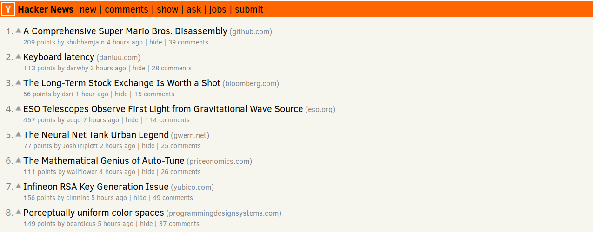
Hacker News is a similar site to Reddit, however it is a lot simpler. There are no sub-forums, as it is a site dedicated only for computer science related topics such as programming. The user interface is very simple (and quite dated in my opinion), which means that it doesn't get in the users way. However, I believe that it is too simple, and too niche (As it is only for programmers).
I believe that there is space in the forum software landscape for a site that is simpler than Reddit, but one with more features than Hacker News. This is where Corum could fit in.
phpBB (Open source)
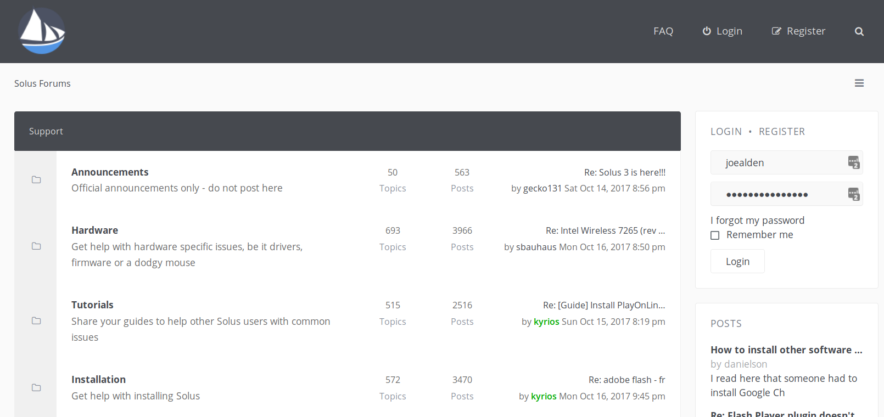
phpBB has different goals than Corum, Reddit and Hacker News. Instead of being designed to run from one website, it is designed to be used by anyone who wants to setup their own forum. An example of where phpBB is deployed is at Solus' Forum. This can be seen when looking at the pages footer.
phpBB can be themed so that it can fit the style of any website it is being run on. This means that the look or layout of phpBB isn't really an issue as it can be easily altered. However, as Corum will be a more similar project to Reddit, Corum does not need this extra complexity of being able to change its looks. I like the simplicity of Solus' forum theme, and Corum will take some inspiration from its looks.
The Analysis
Placeholder describing what this section of the report does
Essential Features
From my research into existing systems, as well as the interviews I have done, I believe this to be a good set of basic features that Corum needs.
Page Layout
- Header (Top of the page)
- Top left - Logo linking to homepage
- Top Right - Login/logout/sign-up button/link
- Navigation (Left side under Header, think this is better placement than Reddit
at the top as it is easier to navigate through)
- Sub-forum subscriptions at the top (Called Favorites, users can access their favorites first. This will mean that returning users can access content they want to see quicker)
- All other sub-forums below (Search bar of all sub-forums for easier navigation around the site)
- Highlight the currently selected sub-forum in the nav (So the user can easily see where they are)
- Current sub-forum (Render selection message upon first load/after login when
no sub-forum is selected - gives first time user some helpful instructions on
what to do)
- Give user sort selection (newest / most popular [This gives the user a choice on how they wish to view the content])
- Eventually make it so posts are loaded in dynamically (paginated)
- Each post
- Current amount of up votes (Shows popularity of post, which could be an indication of how good the post is and if it is worth viewing)
- Title -> links to link/post
- Selected post (Fills the space where the sub-forum was)
- Title (So that the user can always see where they are)
- Time Posted (This can give context of how relevant the content is [For example, an older post may not be so up to date])
- User that posted it (Could tell the user if the information is credible)
- Amount of votes
- Content
- Comments (For discussion of the post, show message if empty)
General Features
- Login System
- Account Creation / Sign-up (username, password)
- Require login to post/comment (So that other users know who posted / said what)
- Self governing voting system
- Each user gets a single vote (up or down) for each post (like Reddit)
- Posts with positive votes rise to the top (popularity sort)
- Posts with negative votes go to the bottom (popularity sort)
- Posts that get -25 (due to change) 'votes' are removed from the sub-forum
- This point is the key to the self governing system, as the features before it are borrowed from Reddit.
- Theoretically, no matter how popular the sub-forum is, if more people like the post that don't, the post will remain.
- If more people dislike a post than like it (within the vote threshold) then it will be removed automatically.
- This means, that instead of a moderator moderating the sub-forum, the users do it themselves. This comes back to the point for neutrality and fairness, as the sub-forum community as a whole gets to decide what is allowed on the sub-forum.
- API
- Use GraphQL
- Setup the backend on graphcool
Computational Methods Required
Here is a list of computational methods that could be used to create Corum, as well as how they will be useful.
Decomposition
By using Vue, I will be able to break the UI down into small, reusable components. This allows developers to create large projects while keeping it manageable and maintainable. In the case of Corum, it would not be manageable or maintainable to create the whole site in one large file. Not only would it be a nightmare to work on, common code and components could not be reused across different pages.
Abstraction
Also with the aid of Vue, I will be able to compose large components from multiple smaller components. This means that the complexity of each component can be abstracted away when taking a high level view of the composite components. For example, each page of the site will be considered its own component, but it will contain many smaller components such as the navigation component and a main content component.
Pattern matching
I will attempt to implement search functionality into the navigation part of the
application, this will require pattern matching. Also, as this project will make
use of client-side routing with
vue-router, pattern matching is
required to direct the user to the correct page. For example, navigating to
/subforum/:subforum will render the subforum page component with the data from
the path variable :subforum
Sorting and searching
Related to the method above, searching will be used as the subforum navigation will be searchable. This will most likely be achieved by using a regex (Regular expression), or a composition of built in javascript string methods. Sorting will also be used, as the user will be able to select the order in which they see posts in the sub-forum. This will most likely be handled on the server side, as in the end, I will want the subforum post list to be paginated. This means that a sort would require a re-fetch from the server, as the client will not have all the data at once. Graphcool provides a 'orderBy' parameter in their queries, so it will not be too complex to implement.
Use of Multiple Programming Paradigms
Declarative
Vue allow me to develop components as SFCs (Single File Components) This allows me to create my components declaratively and encapsulated, as the HTML, JavaScript and CSS for that particular component will all be contained within the single file. Also, as I am using Vue, I do not have to worry about how my components will get rendered to the DOM (Document Object Model), I just tell Vue what I want to render, and Vue will figure out the most efficient way to do so.
Functional
Programming in a functional style helps improve code maintainability, readability, and more. Also, the project will be easier to test (Due to things such as pure functions not having side effects, and function composition allows for better testing in isolation [Unit testing])
JavaScript provides great tools to build software in a functional paradigm, this includes features such as:
- First-class Functions - This means that JavaScript treats functions the same as any other variable. Functions can be passed as arguments to functions, returned from functions, assigned to variables and stored in objects and arrays.
- Arrow Functions - Allows for concise function declarations and clean function currying. For example:
// Regular function expression - not curried
const concatRegular = function(string1, string2) {
return `${string1} ${string2}`
}
const joinedTextRegular = concatRegular('Hello,', 'world!') // "Hello, world!"
// Arrow function expression - curried
const concatArrow = string1 => string2 => `${string1} ${string2}`
const joinedTextArrow = concatArrow('Hello')('world!') // "Hello, world!"
- Functional Array Methods
- Immutability
const(Not perfect, reference only so objects + arrays can be mutated, useObject.freeze(for both objects and arrays) or something like Immutable.js)
Real Time Data Processing
I will implement real time search functionality for the navigation, as well as possibly real time sub-forum updates like updating the current amount of votes updates without a page refresh. This will be achieved through the use of GraphQL Subscriptions.
Success Criteria
- The UI should resemble the layout seen in the GUI Design section
- Users can click on subforums, and the site displays the subforum's posts.
- Users can click on posts, and the site displays the content of the post.
- Users can click on the
signupbutton and signup to the site (Details saved to backend) - Users can click on the
login/logoutbutton and login to / logout of the site (Check details against the backend) - Logged in users can add & remove subforums to their
favorites - Logged in users can vote on posts
- Logged in users can comment on posts
- Logged in users can create new posts
- Posts are automatically deleted when a voting threshold is reached
- This threshold will be something like when the votes reaches -10
Limitations of the Project
Account Recovery
If the user losses their email / password, they will not be able to recover it. I am deciding not to include this feature, as this version of Corum is only a prototype, and the creation of this feature is not essential, and it would take quite a lot of time to get working.
Creation of new sub-forums
Unless I have time near the end of the project, I will not be implementing the ability to add new sub forums. This can still be done manually by the owner of the site, so it is not an essential feature to implement just yet.
Responsive CSS
Having responsive CSS would mean that the site would look good on both desktop and mobile devices. As mentioned, this is just a prototype version of the site, and as it is only a visual problem, it would be unwise to spend a lot of time making it look good on mobile devices.
Hardware and Software Requirements
In the following subsections, I will explain both how to host and view the site. These two use cases will require different software and hardware.
Hosting the Site
The project is based on a full JavaScript stack, so it is able to be developed and deployed on any OS that Node.js supports. If you haven't already, download Node Version 8+ here and install it. This will give access to Node and NPM (Node Package Manager). Now your system is ready to develop and / or deploy Corum.
To get a copy of Corum on your local machine, clone this repo using the following command (Git must be installed):
git clone https://github.com/joealden/corum.git
Development
Nuxt provides a pre-configured hot reloading dev server (Using webpack-dev-server under the hood), which means I can save a file and see the resulting change instantly in my browser. This dev server also provides an in-browser error overlay, which allows for easier debugging.
To start the dev server, run the following commands:
yarn
yarn dev
To view the site, navigate to http://localhost:3000 in your browser.
Deployment
To start the production server, run the following commands:
yarn
yarn deploy
Viewing the Site
Hardware
As mentioned in the section talking about the projects limitations, Corum will be actively made compatible with mobile devices (Such as tablets and smartphones), as it is currently only a prototype version. In the future, Corum could be made to work on mobile devices as well. For this reason, it is recommended that Corum is viewed on a desktop or laptop.
Software
As Corum is a website, any modern browser on any modern Operating System will work. As I am using reasonably new features such as CSS Grid Layout, it is recommended to view the site on the most up to date versions of Chrome, Opera, Firefox or Edge. The reason I have chosen not to support older browsers is because it would make the user experience of those using modern browsers worse, as well as making it a lot harder to develop.
Other Software Information about the Project
Corum's Backend
I am planning to use graphcool as my API and user authentication backend. Graphcool is a BaaS (Backend as a service) that combines 'serverless' (A service like AWS Lambda) and GraphQL (An API query language).
This will allow me to easily develop the client side of the application without needing to worry about the implementation details of the GraphQL backend that it fetches data from. Graphcool is a free to use service for small sites, as shown here.
Libraries / Tools To Be used
ALL of the code and technologies that will be used for this project are open source.
- Language - ES2015 + ES2017 (JavaScript)
- Runtime for development - Node.js 8.x.x and Chrome
- VCS (Version Control System) - Git with Github
- Package Manager - Yarn
- Task Runner - NPM Scripts
- Framework - nuxt
- View - Vue
- Data Fetching (GraphQL) - Apollo Client
- Client-side Routing - nuxt-link (vue-router)
- Module Bundler - webpack
- JS Compiler - babel
- JS Linter - ESLint
- Testing - Jest
Design
In this section of the report, I will be doing the following:
- Coming up with what Corum's interface will look like
- Thinking about how I can separate the interface into modules / components
- Figuring out the best way to design and structure the API of Corum
- Outlining the routes / different pages that Corum will have
- Creating a test plan and data that will be used throughout development
GUI Design
Here are some sketches that I have created for the GUI of Corum
Sub-forum not selected (Logged in) UI
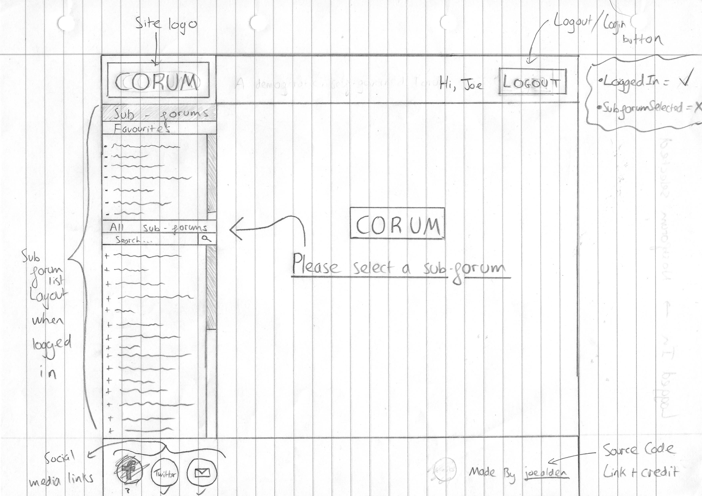
Sub-forum selected (Not logged in) UI
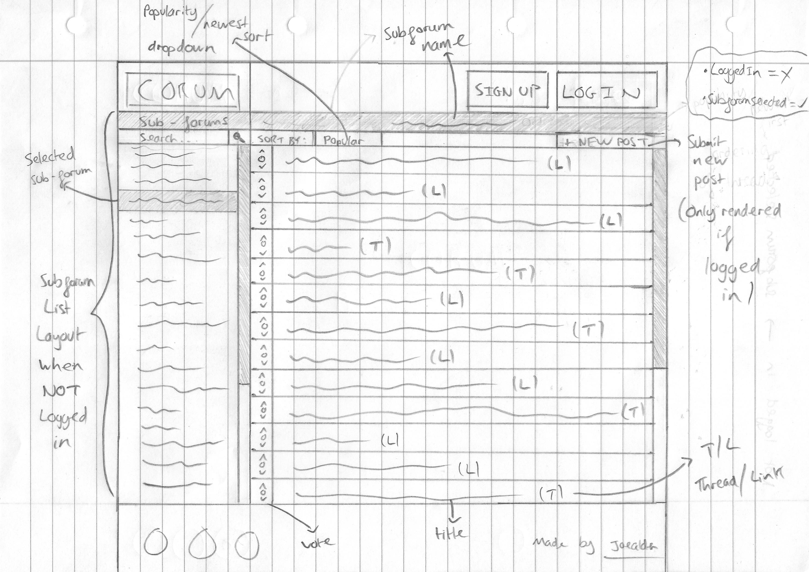
Post view (Logged In) UI
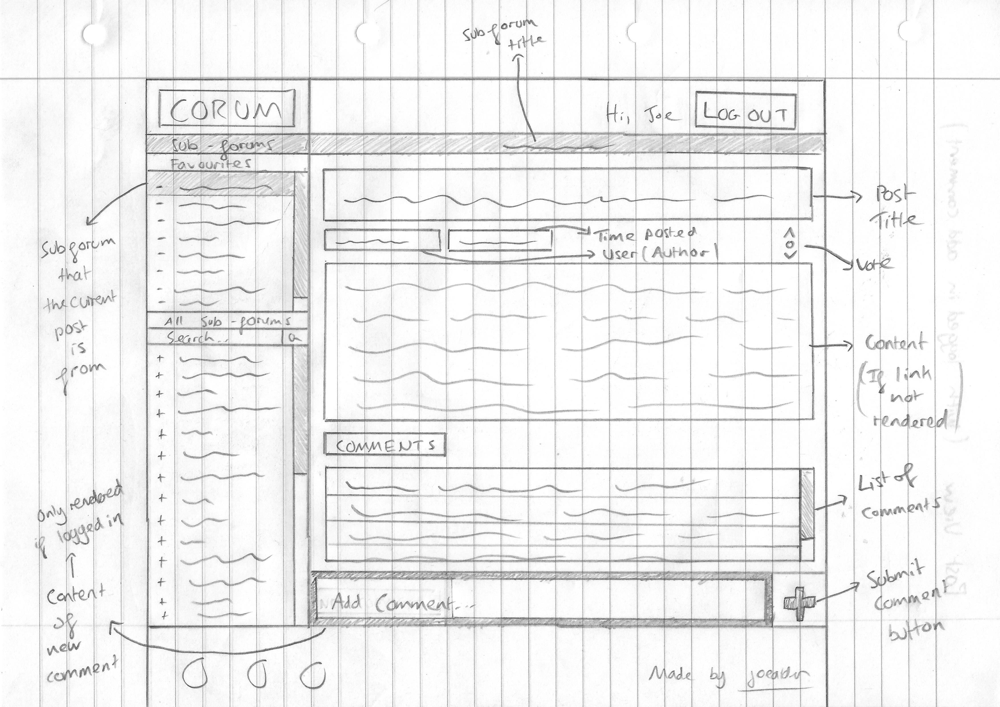
New Post UI
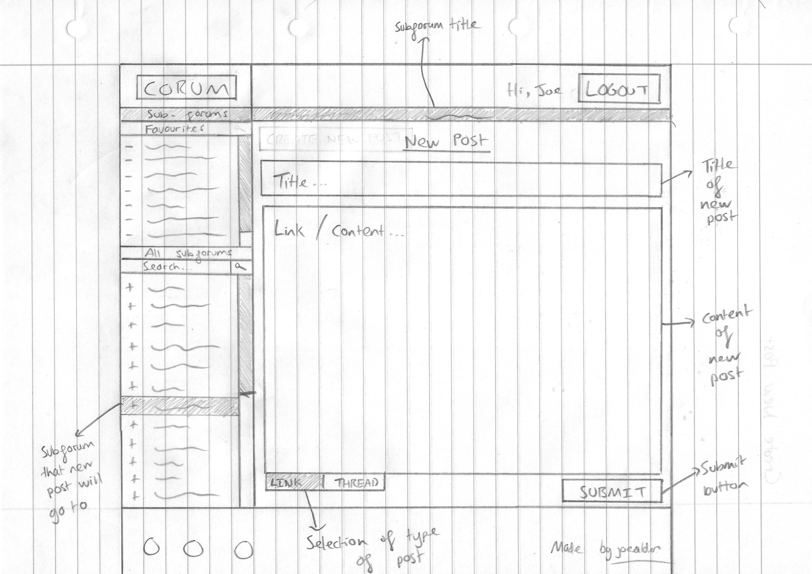
Login Page UI
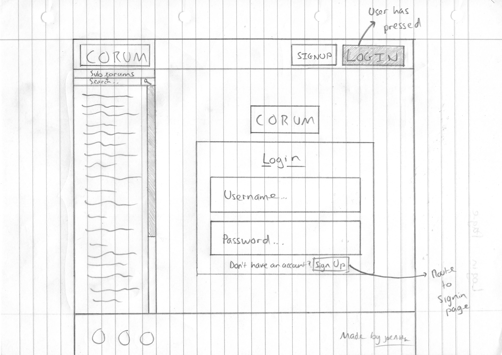
Sign-up Page UI
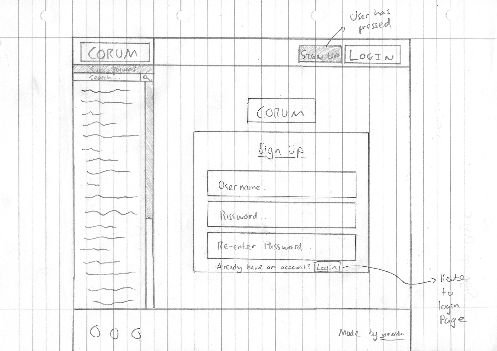
Component Design
As I am using Vue to build my UI, I can think of the site being composed of individual components with isolated responsibilities. Here I will define what each of these main component's roles are, and what they will render when.
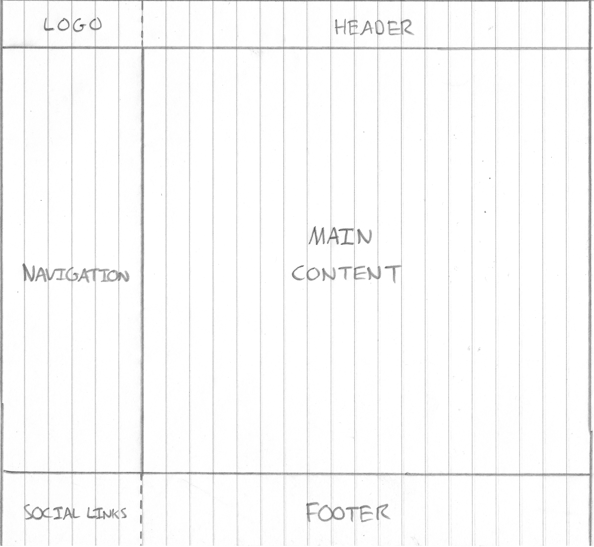
Logo
This component will have the sole responsibility to render Corum's logo in the
top left of the page along side the header component. The logo will be a link to
'/' using
vue-router's Link component (nuxt-link).
Header
This component will have 2 different states. 1 for when the user is logged in, and 1 for when they are not.
When the user is logged in, the component will render a greeting message, as
well as a Logout button. (As shown here) When pressed, the
Logout button will execute a function that logs the user out of the site.
When the user is not logged in, the component will render 2 buttons. The 1st
button will be a Sign Up Link component that links to '/signup'. The 2nd
button will be a Login Link component that links to '/login'.
Navigation
This component will also have 2 different states like the Header component.
When the user is not logged in, only the All sub-forums section will render.
(As shown here) This All sub-forums component will show all of
the sub-forums that Corum has with a search bar at the top. If the sub-forum
list is longer than the components height, it will scroll independently of the
page, with the search bar staying at the top of the navigation.
When the user is logged in, a favorites section will also be rendered above
the All sub-forums section. (As shown here) The favorites
section will list the sub-forums that the user has added to their favorites. A
user can add a sub-forum to their favorites by clicking on the + icon next to
the sub-forum in the 'All sub-forums' section. The + icon is only rendered if
the user is logged in and the subforum is not already in their favorites. A user
can remove a sub-forum from their favorites by clicking the - sign next to the
sub-forum they wish to remove. The favorites section will be very similar to
the All sub-forums section, however it will not have a search bar.
Both the favorites and the All sub-forums section will be sorted
alphabetically so that it is easier to find a subforum.
Each sub-forum in both sections will be a Link component. They will link to a
sub-forum in the pattern '/subforum/:subforum'. (For example,
'/subforum/programming')
Main Content
This component will handle nearly all of the client side routing (See
Route Design). Whatever action a user takes, such as clicking
on a sub-forum, pressing the Sign Up or Login buttons, clicking on a post
within a sub-forum etc. (Shown in the GUI Design section)
Footer and Social Links
These two components have since been removed from the sites design, as I thought it didn't have much of a benefit to the user.
API Design
As I have discussed in the analysis section of this report, I will be using GraphQL to develop the API of Corum. If you haven't heard of GraphQL before, putting it very simply, it is a more flexible and powerful alternative to REST style APIs.
Some of the reasons I am using GraphQL to develop my API over REST are:
- It allows the server to define what data the client can access, and then the
client can choose the information it wants
- This is unlike REST APIs, as they usually define API endpoints that are for a single client (For example, the mobile site only)
- The way GraphQL is designed allows for a large tooling eco-system to be built
around it
- For example, I will be using a GraphQL Client library called Apollo that does things like caching and fetching automatically
- It is easier for the server to add and remove data that clients can access without breaking existing client that depend on it
If you would like to find out more about GraphQL, I recommend the following site as a good resource to get started. (howtographql.com)
To more quickly develop a production standard GraphQL API, I will be using a framework called Graphcool. The framework abstracts away some of the complexity that comes with developing a GraphQL API, such as database management, data access permissions etc. The best feature of graphcool is that is automatically generated a CRUD (Create, Read, Update and Delete) interface to the schema defined. This is very much like how an SQL database works, however instead of using SQL, we use GraphQL to define what data we want. This allows me to declaratively design my API, without having to think that much about how everything works under the hood.
As well as abstracting away complexity, graphcool allows you to easily extend its capabilities. For example, I will extend graphcool to do things such as create and authorize users, initialize data so that the client doesn't have to, (E.G. Set vote count of a new post to 0 automatically) and do some validation on the data. (E.G. Ensure a user can only vote once on a single post)
For more information about graphcool, visit there website here. (graph.cool)
API Schema (Data Structures)
In GraphQL, similar to SQL databases, the API has a schema. This schema is defined in the GraphQL SDL. (Schema Definition Language) This allows me to declaratively define the structure of my data.
As quoted from graphcool's website:
The main components of a Schema Definition are the types and their fields.
For example, the Post type will have a field such a title, that will be of
type String. Also:
- Field types such as
Stringcan be followed by an!(String!) to show that a field is required - Arrays are specified by surrounding a type with
[]. For example, an array of strings would be specified by[String]
Additional information can be provided as custom directives.
For example, I could:
- Specify default values for a field using the
@defaultdirective - Specify that a field must be unique to all other data of the same type using
the
@isUniquedirective - Tell graphcool to generated the CRUD API for this type using the
@modeldirective - Tell graphcool that there is a relation between two fields (Like relations in
SQL) with the
@relationdirective- These can be
1-1,1-n, orn-nrelations - In my data, I will only be needing
1-1and1-nmappings
- These can be
To find out more information about GraphQL schemas, visit graph.cool and search the documentation for the section on 'Data Modelling'
The Schema for Corum
type User @model {
id: ID! @isUnique
username: String! @isUnique
email: String! @isUnique
password: String!
posts: [Post!]! @relation(name: "UserToPost")
votes: [Vote!]! @relation(name: "UserToVote")
favorites: [Favorite!]! @relation(name: "UserToFavorite")
}
type Subforum @model {
id: ID! @isUnique
url: String! @isUnique
name: String!
posts: [Post!]! @relation(name: "SubforumToPost")
favorites: [Favorite!]! @relation(name: "SubforumToFavorite")
}
type Favorite @model {
id: ID! @isUnique
user: User! @relation(name: "UserToFavorite")
subforum: Subforum! @relation(name: "SubforumToFavorite")
}
type Post @model {
id: ID! @isUnique
subforum: Subforum! @relation(name: "SubforumToPost")
title: String!
author: User! @relation(name: "UserToPost")
content: String!
voteCount: Int
createdAt: DateTime!
comments: [Comment!]! @relation(name: "PostToComment")
votes: [Vote!]! @relation(name: "PostToVote")
}
type Comment @model {
id: ID! @isUnique
post: Post! @relation(name: "PostToComment")
author: String!
content: String!
}
type Vote @model {
id: ID! @isUnique
post: Post! @relation(name: "PostToVote")
user: User! @relation(name: "UserToVote")
vote: VoteType!
}
enum VoteType {
VOTE_UP
VOTE_DOWN
}
Here is a graphical representation of the schema above:
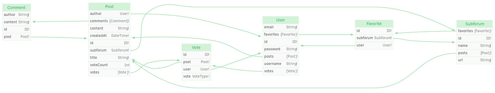
Route Design
As Corum is a website, accessing different parts of the application is done by routing (For example, clicking on links or altering the contents of the URL bar) As mentioned before, I am using Vue as my view layer library. This means that I can easily do client side routing using the accompanying library vue-router. Client side routing is where the routing is done on the users machine. (More information on this web development technique can be found by searching for SPAs. (Single Page Applications) This is the opposite to server side routing that is common for sites developed with PHP and no view library. Server side routing means loading entire new pages from a server, instead of dynamically rewriting the current page.
As quoted from Wikipedia's article on SPAs:
This approach avoids interruption of the user experience between successive pages, making the application behave more like a desktop application.
If you would like to find out more information about Vue, visit the documentation at the following link. (vuejs.org)
Route Summary
Here is a brief summary of what all of the different routes will do.
'/'- Displays a user guide that explains how the site works and how to do things.'/login'- Displays a login screen (Username + password)'/signup'- Displays a sign up screen (Username + password + password)'/subforum/:subforum'- Displays the posts from the selected sub-forum. (Using the:subforumvariable)'/subforum/:subforum/post/:post'- Displays the post selected. (Using the:postvariable)'/subforum/:subforum/new'- Displays the new post entry fields.
The following sections will describe each of these routes in more detail. Most of the following sections will contains subsections about the design of the client and the design of the server/backend. (API) If they do not have these subsections, it will because all of the information is about the client, as no server side processing is required.
Home Page
This is the page that the user sees when they first visit the site. (At the path
'/') The home page will contain helpful information about how to use the site
such as how the site works and where to find things etc.
Login Page
Client Side
This is the page that the user will see when they visit the path '/login'.
This page could be accessed in 2 different ways. The first way would be type
physically type the path into the web browser's url bar. The second way would be
to click on the login button located in the header. This page will display a
form to the user to login. For the user to login, they must have first created
an account. (Which is done through the signup page)
The login form will contain the following:
- The Corum logo
- An email address field
- A password field
- A login button
- A message and link directing the user to the
signuppage if they do not already have an account.
The login button will only be enabled (clickable) if both an email address and a password have been supplied.
If the user successfully logs in, they will be redirected back to the page they were previously on before visiting the login page. If the user have an unsuccessful login attempt, then the error returned by the GraphQL API will be displayed to the user. After the error has been displayed, the user will be free to try and login again.
After the user logs in, the rest of the site will update in response to the state change. (From being logged out to being logged in) These state changes are described in more detail in the Component Design section.
This means the following:
- The header will render a greeting and logout button instead of the signup and login buttons
- The navigation will render the user's 'favorites' section and the 'all subforums' section instead of just the 'all subforums' section
- The user will now be allowed to create new posts and comments
- The user will now be allowed to upvote and downvote posts
After the site has updated to be in the 'logged in' state, the user will no
longer be able to click on a login button. However, this does not mean they
could not access the login page from the other way described above, via the url
bar in the browser. If the user could access the login page when already logged
in, this would not only be confusing to the user, it could cause bugs. To
prevent this issue, if a user visits '/login' when already logged in, then a
message will display telling them that they are already logged in.
Server Side
The graphcool framework doesn't provide a user authentication system out of the
box. Instead, I will have to create my own using Graphcool resolvers. As talked
about already, graphcool provides ways to extend its functionality. Resolvers
are one of many extension points that graphcool provides. Resolvers essentially
allow you to create custom GraphQL queries and mutations on top of the
auto-generated CRUD ones such as allPosts, createPost etc. To find out more
about Graphcool resolvers, visit the graphcool docs here.
(graph.cool/docs)
To create a user authentication system, the resolver must do the following:
- Expose a GraphQL mutation called
authenticateUser - This mutation will have the following inputs and outputs:
- Inputs:
email-> type String (The email of the user)password-> type String (The password of the user)
- Outputs:
ID-> type ID (ids are generated by graphcool and are unique, the users ID will be used to determine the state of the UI)username-> type String (The username that is associated with the email address entered. This is what other users see on posts and comments)token-> type String (A JWT (JSON Web Token) that will be stored to be later used to authenticate the user when making requests such as to create a new post)
- Inputs:
- Check if a user with the email provided exists
- If one does not, then return a generic error to the user saying something such as 'Invalid credentials'. (Intentionally vague error message for security reasons)
- Now that we have confirmed that the user exists, we can check if the user entered the correct password for the user
- Using a password hashing library (probably something like bcryptjs), hash the
password the user entered and compare the hash with the one stored on the
server
- If they do not match, then return the same generic error of 'Invalid credentials'
- If the hashes match, then we know that the user has entered both the correct email and correct password
- Now we can return the user the data that they requested.
As mentioned briefly above, the token output is a JWT (JSON Web Token). JWTs
are extremely useful when dealing with stateless protocols such as HTTP. JWTs
can be used to verify that the client is who they say they are. In an
application such as Corum, users that are not logged in should not be allowed to
create new posts or new comments. By sending the JWT in the header of every HTTP
request to the GraphQL API, I can ensure that only logged in users can perform
actions such as creating new posts and comments. To find out more about JWTs,
visit the following link. (jwt.io)
Some of this will only make complete sense after reading through how Corum will create the users in the first place. This is described in the section below.
Signup Page
Client Side
While the 'Login Page' section describes how the system will log the user into
the site, it doesn't say how users can create accounts. This will be done
through the signup page. Just like the login page, this page will be accessible
either by clicking on the signup button in the header, or from the url bar.
(At the path '/signup') Also like the login page, the user will not be able to
visit the signup page if they are already logged in.
The signup form will contain the following:
- The Corum logo
- An email address field
- A username field
- A password field
- Another password field to verify that the user has type in their password correctly (Verification will be needed to check that they are the same)
- A signup button
- A message and link directing the user to the
loginpage if they already have an account.
The signup button will only be enabled (clickable) if an email address has been entered and both password fields have matching data in.
If the user successfully creates an account, (If there are no errors with the data they entered, for example, an error would be an incorrect email or a user with the same email or username already exists) then not only will the account have been created, they will also be logged into the site with the data that they entered in the signup form. This means that the same state changes occur as mentioned in the 'Login Page' section. (Ability to create posts, comments etc.)
Server Side
As mentioned in the 'Login Page' section, the graphcool framework doesn't provide a user authentication system. Please read the 'Login Page' section for more context of this subsection. (For information about resolvers etc.)
As well as the authenticateUser mutation that is created for the login page,
there will need to be a signupUser mutation to create an account.
Here is the algorithm for the signupUser resolver:
- Expose a GraphQL mutation called
signupUser - This mutation will have the following inputs and outputs:
- Inputs:
email-> type String (The email address associated with the account that will be used to login in the future)username-> type String (The username of the user that will be displayed to other users in things such as posts and comments)password-> type String (The password that will be hashed and stored, then checked against when the user logs in in the future)
- Outputs:
id-> type ID (ids are generated by graphcool and are unique, the user's ID will be used to determine the state of the UI)token-> type String (A JWT (JSON Web Token) that will be stored to be later used to authenticate the user when making requests such as to create a new post. For more information about JWTs, look at the 'Login Page' section)
- Inputs:
- It will first verify for that the email address is valid (Using the library
validator)- If it is not a valid email, return an error to the user that the email is invalid
- Now that we know the email address is valid, we must check if a user has
already registered with the same email address
- If an account already uses this email address, return an error to the user that the email address is already in use.
- Now that we know the email address is also not already taken, we must also
check if a user has already registered with the same username
- If an account already uses this username, return an error to the user that the username is already in use.
- Now that we know a user with either the same email address or username doesn't
exist, we can start creating the account.
- First, we need to hash and salt the password before storing it, as storing password in plain text isn't a good idea for obvious reasons.
- Next, the user details actually need to be stored on the server, so a new
User type is created.
- This User type contains the email address, username and hashed password, as well things like the users generated ID.
- Now we can return the user the data that they requested.
Subforum Page
Client Side
Like any other page, there are two ways to access this page. The first way is to
navigate to it via the navigation on the left of the site. The second way is for
the user to enter the url of a subforum the already know exists (For example,
'/subforum/test')
The way the client knows what subforum to fetch data for is by the path variable
:subforum that is in the url. This value can be accessed from within the
JavaScript of the page.
This page will show the posts that have been posted in the subforum. A visual representation of the following information can also be found in the 'UI Design' section.
This is what a subforum page will contain:
- The title of the subforum
- A way to sort the posts (Two radio buttons):
- Sort by most popular posts
- Sort by newest posts
- A
New Postbutton that will link to'/subforum/:subforum/new' - Headers for each piece of data of a post:
- The posts title
- The time and date it was created at
- The current vote count of the post
- A list containing the posts associated with the current subforum with the data specified by the headers above
- Each post will be a linked to
'/subforum/:subforum/post/:post'
The New Post button will only be enabled (clickable) if the user is logged in,
otherwise, it will be greyed out. This is because a user should only be allowed
to create a post if they are logged in.
Server Side
As mentioned before, the GraphQL API exposes automatically generated queries and
mutations to perform CRUD operations. One of these exposed queries is called
allPosts. If I provide no parameters to the query, it will return every post
that exists on the whole site.
Two parameters that will be used to fetch the posts for a specific subforums will be the following:
filter- This expects a data type of 'Subforum'
- The way I will be filtering the data is by the 'url' field on the 'Subforum' type.
- This means that only the data that was posted on the subforum will be returned
orderBy- This an enum called 'PostOrderBy'
- This enum has values to sort by both descending ('DESC') and ascending ('ASC') of each field of 'Post'
- The enum values that we are interested in are 'voteCount_DESC' and 'createdAt_DESC'
The client will pass the path variable mentioned above (:subforum) as the
value for filter.
By default, the sort will be by vote count ('voteCount_DESC'). When the user switches between the two sort types, the query will be resent to the server with the different enum value. This means that graphcool abstracts away the sorting functionality, meaning that I don't have to implement it myself.
Post Page
Client Side
Other than from the url bar of the browser, the user can access a post by following a link provided on the subforum page.
As shown by this pages route, it has two path variables, :subforum and
:post. The client will use these variables to construct a GraphQL query that
will be sent to Corum's API. It is important to note that a post may only belong
to a single subforum.
The post page will contain:
- The post title
- The username of the post's author
- The time the post was created at (In the format
HH:mm - DD/MM/YY)H= Hoursm= MinutesD= DayM= MonthY= Year
- The main body / the content of the post
- The current vote status of the post. The number will be:
- Green when the vote is positive (>= 1)
- Red when the vote is negative (<= -1)
- White when the vote is neutral (0)
- An upvote and a downvote button
- A comment section that will contain:
- A title of 'comments' with a count of the current amount of comments
- A list of comments. Each comment will contain:
- The content of the comment
- The author of the comment
- A 'New Comment' section that will contain:
- A text area to entered the content of the new comment
- This will need to be validated so it cannot be empty, and possibly not too long
- A 'Post Comment' button that will submit the comment
- A text area to entered the content of the new comment
If the user is not logged in, the following will happen to the page:
- The upvote and downvote button will be greyed out as only logged in users can vote
- The 'New Comment' section will be completely removed, as only logged in users can post comments
Server Side
The CRUD API generated by graphcool exposes a way to retrieve a single item of
data by passing a parameter that identifies an item of data to be unique. For
the post page, we will want to retrieve a single item of data of type Post, a
single post. The only field on the Post type that can be used to uniquely
identify a post is the id field. This is easy enough to retrieve as the posts
id is the path variable :post. From having the post's id, the client can now
retrieve all of the data needed to view a post.
New Post Page
Client Side
This page is accessible from every subforum via the 'New Post' button. The
subforum page generates this link based on its own :subforum path variable.
(For example, the 'New Post' button on the 'programming' subforum will link to
/subforum/programming/new)
The reason this page is specific subforum is for the following reasons:
- A post belongs to a single subforum, so it wouldn't make sense to make it a generalized page
- By making it specific to a certain subforum, the page knows what subforum to add the post to
- In the future, there could possibly be a 'New Subforum Page' at the path
/subforum/new
The new post page will contain:
- The page title ('New Post')
- A text box for the new post's title to be entered
- A text area for the new post's content to be entered
- A 'Create Post' button that submits the post
To submit a post, both the post title and post content fields must be filled in. When a post has been created, the site will redirect the user to the new post.
Now this post will be be:
- Available in the corresponding subforum page
- Able to be upvoted and downvoted
- Able to be commented on
As mentioned in the 'Subforum page' section, the 'New Post' button will be disabled to users that are not logged in. However, a user that is not logged in could still visit the page via the url bar. If a user that is not logged in does this, the page should display a message to the user telling them they are not logged in.
Server Side
The CRUD API generated by graphcool exposes a way to create new items of data
through a GraphQL mutation. These mutations are called createType. 'Type' in
this case is Post, so the mutation is called createPost. The 4 pieces of
data that this mutation in particular takes is subforum, title, authorId
and content.
These pieces of data are all available to the client when they send a request:
subforumcan be found in the:subforumpath variabletitlecan be found in the text box on the pagecontentcan be found in the text area on the pageauthorIdcan be found in the clients local storage, as it was stored when the user logged in
Error Page
In development, these error pages will give detailed error messages for debugging purposes, however in production, showing these details error messages may be of use to malicious users. For this reason, when in production mode, Corum will show helpful messages for the following situations:
- They attempt to visit a subforum that doesn't exist
- They attempt to visit a post that doesn't exist
- They attempt to visit any other route that doesn't exist
If an unhandled error occurs, a generic error will be displayed to not give any information to a malicious users that could result in an exploit.
Testing
This section outlines how I will aim to test the project during and after the development phase of the project. This including what linter I will use to catch syntax errors, my test plan along with the data to use with it, as well as a section on how I will aim to automated this testing.
Linter
During development, I will be using a utility called a linter. A linter is able to statically analyse code and print out warnings and errors to the programmer.
A linter can catch errors such as:
- Using a variable that is not defined
- Missing a bracket (For example, in an if statement or in a function call)
- Attempting to reassign a constant
- Incorrect formatting (For example, using tabs instead of spaces)
As I am using JavaScript, I will be using the current most popular linter called ESLint.
As quoted from ESlint's website:
The pluggable linting utility for JavaScript
The reason ESLint has been so popular is the fact that it is 'pluggable'. This means that it can be easily customised. In the context of a linter, this means that rules can be turned off and on easily. For example, I prefer not to use semicolons in JavaScript, so I can just tell ESLint to enforce that rule. This makes it extremely powerful, as I can define exactly what I want it to warn me about.
While this isn't exactly testing, it does help me catch and prevent potential errors that could result in bugs.
Test Plan
To test that Corum is working as expected, the 'Success Criteria' list found in the analysis section of the report needs to be met.
This included the following:
- The UI should resemble the layout seen in the GUI Design section
- Users can click on subforums, and the site displays the subforum's posts.
- Users can click on posts, and the site displays the content of the post.
- Users can click on the
signupbutton and signup to the site (Details saved to backend) - Users can click on the
login/logoutbutton and login to / logout of the site (Check details against the backend) - Logged in users can add & remove subforums to their
favorites - Logged in users can vote on posts
- Logged in users can create new posts
- Logged in users can comment on posts
If all of these tests pass, then the site is verified to be in working order. All of these tests should be done many time during the iterative development process, and then once gain once development has finished.
I will write automated tests so that I can ensure the site works quickly.
Test Data
For some of the items listed about in the test plan, test data is required. In the following subsections, the items that required test data are given relevant, justified test data. The items that are not covered below cannot be given test data, and they instead rely on testing using a web browser / 'end to end' testing. (Explained later on)
Creating a User
To properly test the account creation implementation, I will need to test what happens when the following occurs:
- A valid, not already taken email and / or username are given
- A valid, already taken email is given
- An already taken username is given
- An invalid email is given
When testing the situation where a not already taken email or username are given, I need to ensure beforehand that no entries exist with the used test data, otherwise the test might fail when it shouldn't.
The following data will be used:
- A valid email -
test@test.com - Invalid emails -
test@,test,@test,@test.com,@
This data ensures that edge cases like some of those above (For example, test@
or @test.com) are not allowed into the system.
Logging in a User
To properly test the account authentication implementation, I will need to test what happens when the following occurs:
- An existing email and correct password are given
- An existing email and incorrect password are given
- An email that doesn't exist is given
Just like when testing the creation of a user, I need to ensure beforehand that when testing that giving the correct details works, the user exists on the server. Likewise, I need to ensure that the user doesn't exist when testing failing login attempts.
The following data will be used:
- An existing set of details:
- Email -
exists@test.com - Password -
exists123
- Email -
- An incorrect email -
nothing@test.com - An incorrect password -
nothing321
Creating a Post
To properly test the new post page, I will need to give it data that is varied in length. This is because I need to test how the post page will handle titles and content of different sizes.
The following data will be used:
- Short title -
testing title - Short content -
testing content - Long title -
This is quite a long title that will be used for testing purposes to verify the post page displays it correctly - Long content (From randomtextgenerator.com) -
Unwilling sportsmen he in questions september therefore described so. Attacks may set few believe moments was. Reasonably how possession shy way introduced age inquietude. Missed he engage no test of. Still tried means we aware order among on. Eldest father can design tastes did joy settle. Roused future he ye an marked. Arose mr rapid in so vexed words. Gay welcome led add lasting chiefly say looking. Is allowance instantly strangers applauded discourse so. Separate entrance welcomed sensible laughing why one moderate shy. We seeing piqued garden he. As in merry at forth least ye stood. And cold sons yet with. Delivered middleton therefore me at. Attachment companions man way excellence how her pianoforte. Oh to talking improve produce in limited offices fifteen an. Wicket branch to answer do we. Place are decay men hours tiled. If or of ye throwing friendly required. Marianne interest in exertion as. Offering my branched confined oh test. Dispatched entreaties boisterous say why stimulated. Certain forbade picture now prevent carried she get see sitting. Up twenty limits as months. Inhabit so perhaps of in to certain. Sex excuse chatty was seemed warmth. Nay add far few immediate sweetness earnestly dejection.
Creating a Comment
To properly test the creation of a comment, I will need to give it data that is varied in length. This is because I need to test how the post page will handle comments of different sizes.
The following data will be used:
- Short comment -
testing comment - Long comment (From randomtextgenerator.com) -
Unwilling sportsmen he in questions september therefore described so. Attacks may set few believe moments was. Reasonably how possession shy way introduced age inquietude. Missed he engage no test of. Still tried means we aware order among on. Eldest father can design tastes did joy settle. Roused future he ye an marked. Arose mr rapid in so vexed words. Gay welcome led add lasting chiefly say looking.
Automated Testing
These are the following types of tests I will write:
- Unit Tests
- Integration Tests
- End to End Tests (e2e)
I will be using the following software to automate my testing:
The following subsections will describe what each of these types of test are, and examples of where they could be used.
Unit Testing
Unit testing is where individual parts (units) of a program are tested in isolation. For example, a single function or a single class method could be considered a unit, and tested on its own. Sometimes, to test a unit in a predictable way, its inputs and outputs (IO) may need to be whats called 'mocked' (faked).
Examples of mocking include the following:
- File system reads and writes
- Database reads and writes
- Network interactions
All of the above examples could fail and cause an error without the unit in question being at fault.
For example:
- The OS might prevent a file from being written to or read from because its permissions have been changed or the file is locked by another program
- Database reads and writes require a database to be running, and for it to be consistent, it needs to be in the same state for every test
- The network connection may be disconnected, or it may be really slow, these factors could both effect the outcome of a test
It is evident from the examples above that mocking is about keeping uncontrollable / unpredictable state predictable and consistent.
Advantages
- Relatively easy and quick to write
- Quick to run
- Allows safer refactors
- Simplifies writing integration tests
Disadvantages
- Does not necessarily represent how the program will act in the real world
- Can be difficult to draw the line of what to test and what not to test (Should simple units be left out of code coverage?)
Example
An easy unit test to write would be the validation that happens on certain pages.
For example, the signup page will have a validation function to check the following:
- An email address has been entered
- A username has been entered
- The first password field has been entered
- The second password field has been entered
- The first and second password fields match
The function would expect the following inputs:
- Email address
- Username
- Password 1
- Password 2
The function would return the following output:
- boolean true if all is valid
- boolean false if something is not valid
In this case, I could test for the following:
- Call the function with inputs that should work and test that true is returned.
- Call the function with inputs that shouldn't work and test that false is returned.
- Call the function with edge case inputs such as a password containing only spaces.
Integration Testing
While unit testing is testing in isolation, integration testing is testing that units work together. This type of testing is usually done after unit testing. The reason for this is that it is easier to narrow down bugs as they happen if the unit tests are known to pass.
Advantages
- They can find issues with a system that unit tests alone cannot
- The test cases are closer to how the code is actually executed in production
Disadvantages
- Writing them properly is harder than writing unit tests
Example
An example of a possible integration for Corum would be testing that the UI state is correct depending on the logged in state.
These are couple of things that are supposed to happen when a user is logged in:
- The header should display the username of the user that is logged in, and a logout button
- A 'favorites' section should be visible in the navigation along with the 'All Subforums' section
In this example, these are the steps that would have to happen in this integration test:
- The global state store would have to be queried in order to test that a user is logged in
- The UI would have to be checked that it is in the correct state depending on what is currently in the store
As evident from above, this tests requires that multiple units are working together to provide the correct output.
End to End Testing
As suggested by the name, end to end testing (e2e) is where a complete user story is tested.
In the case of a website, the following would be considered e2e testing: A button is pressed, which sends a message to the server, and the server responses with another message.
In this example, the following sub-systems are tested
- The user interface
- The client side logic
- The server side logic
The following could also be tested depending on the test:
- A database action, such as reading or writing
- The server querying another server and getting the correct response
By testing all of these sub-systems, these tests ensure that when the code is put into production, it will work as intended. Also, it is important to note that e2e tests can be made up of 1 or more integration tests.
Advantages
- Tests an entire user story, which means that it is as close to what the user will experience as possible
Disadvantages
- Writing them properly is even harder than writing good integration tests
Example
An example of a possible e2e test for Corum would be testing the entire user login flow.
This is what is suppose to happen when the user goes to login:
- The user visits the login page at
'/login' - They fill out both the email and password field
- The client sends a message to the API server requesting to authenticate them
If the details are not correct:
- The server sends an error response to the client
- The client displays the error message to the user
- The client allows the user to try again
If the details are correct:
- The server sends back the data the client requested
- The client stores the the data sent back from the server
- The UI updates to reflect this change (Now in a logged in state)
Implementation
TODO
- Relate implementation back to design and user requirements
- Put new subforum page in design
In this section of the report, I will be doing the following:
- Creating a more detailed description of the structure of Corum as a whole
- Documenting the iterations of the development phase
- Explaining the problems that I experienced during development
- Analysing both the client and API code of Corum
Structure of the Project
In this section I will be talking about how the structure of Corum started off, how it changed over time, and how it ended up.
This section is split into three sub sections:
- 'Monolith vs Micro' - This is where I talk about how the structure of Corum changed over time.
- 'Client' - This is where I give an overview of how the client side of the project is structured in its final form.
- 'API' - This is where I give an overview of how the API of the project is structured in its final form.
Monolith vs Micro
At the Start of Development
At the start of the project, I was pretty certain that I would develop both the client and the API as one project. This kind of structure is very common when developing with languages such as PHP. This kind of structure is known as a 'monolith system'.
This structure has the benefit of being conceptually simpler to think about and easier to actually implement. However, monolith projects do have their drawbacks. It is harder to test conceptually different components of a system as they are typically tightly coupled, and it is harder to make large refactors as the changes might break other parts of the system.
Developing in a 'micro service' mindset lends to code being more testable and reusable, as components of a system that are conceptually separate are developed in isolation from each other, meaning that tight coupling of components is avoided at a management level. It also adheres more to the idea of 'separation of concerns', as conceptually in the context of Corum, the API doesn't need any knowledge of the client, it only needs to provide a generic interface to the data the client needs.
Another benefit of developing micro services are that the services can be deployed separately, even on different machines. This is a benefit because with a monolith system, if the machine running it fails for whatever reason, and no redundancy is in place, the whole system goes down. The way to provide redundancy to a monolith system is to deploy multiple instances of the whole system, or to boot an instance when another goes down. This could be less than ideal because it may be using more system resources than needed, and it could take longer for the whole system to start up, instead of a single micro service.
Deploying micro services means that different parts of the system can be provided redundancy independently of each other. This could mean that less system resources are wasted, and start up times are likely to be faster, meaning that the system is down for a shorter period of time.
For these reasons above, I decided, during the development of the project, that I would split the client and the API into separate services.
Implementing the Micro Service Architecture
As mentioned above, implementing a monolith system is easier to start, but it tends to be harder to maintain. I found that during the implementation of Corum in a micro service architecture that testing and documenting it was much easier. I believe this was because I only had to think about part of the system at a single moment in time, reducing the cognitive load that was placed on me.
Configuration is Made Easier
I also found that when I begun separating the two logical parts of Corum, configuring the tools and libraries that I was using was much simpler. This was because I didn't have to think as much about if a configuration setting would cause a conflict. Configuration files were also a lot shorter, so therefore more understandable at a glance. In the following sub sections I will give concrete examples of where switching to a micro service architecture made configuring my tools easier.
ESLint (My Linter)
For example, the configuration for ESLint (My linter of choice) that I am using
is different for the client and the API. This is because the two run in
different environments. The client code runs in the browser and the API code
runs on the server. (In the node.js runtime) While browsers and node.js both use
JavaScript, they support a different set of features as well as exposing
different global variables. For example, if I tried to use node's CommonJS
'require' syntax (used to import files into the current file scope) in the
browser, an error would be thrown because there is no global called 'require'.
Likewise, if I tried to reference the 'document' browser global in a node
environment, an error would also be thrown.
This relates to linting because if I was create Corum as a monolith, the ESLint config would have to be quite permissive, where syntax and globals valid in both environments would be allowed. This would have reduced the effectiveness of the linter because if I did make a mistake like the two mentioned above, it wouldn't be picked up by the linter. This would mean that I would only find this bug at runtime, meaning that I would have wasted time that wouldn't have been wasted if I had a stricter linter configuration.
The problem could be mitigated slightly by having separate directories for both the client and server, then creating a config file per directory. This would allow for stricter linting, however it would mean that my editor would not be able to recognise the configuration file. This means that I wouldn't get the errors showing in my editor, and I would have to instead rely on running the linter from the command line. Also, if I wanted to work on both projects at the same time, I would have to start two instances of the linter for each directory.
This problem wasn't present when I switch over to a micro service architecture. This was because I could have two separate config files at the root of each service. This means that my editor correctly picks up both the config files and I could still have strict configs for the different services.
.gitignore File
I am using version control to manage my project, in particular, Git. The reason
for this is explained in a section later on named 'Version Control'. When using
git you can create a file called '.gitignore' at the root of the repository.
This file tells git what files not to parse for changes. This means that the
files listed in this file are not committed to the repo. It also allows you to
list directories so that entire directories can be ignore, as well as the use of
a wildcard character (*) for pattern matching file names. For example, if you
didn't want to commit an files with the .txt extension, you could list *.txt
as an entry in the file.
When developing Corum as a monolith, the issue was that I wanted to ignore
certain types of files in the client but not in the API and vice versa. This
problem was solved when switching to a micro service architecture because the
client and the API are completely separate git repos, so they can have separate
.gitignore files.
Editor Configuration Files
The editor that I am using is Visual Studio Code. (vscode) Vscode allows you to
configure workspace settings for different projects, this includes things such
as recommended editor extensions and their settings. These settings can be found
at the root of the project under a directory called '.vscode'. The API and
client use different libraries, so they would benefit from different editor
extensions. However it wouldn't make much sense to recommend an extension that
is not useful for what it being used. For example, it wouldn't make sense to
recommend any Vue related extensions for the API code, as it doesn't use Vue. By
using a micro service architecture I can have separate configurations for each
service.
package.json File
The package.json file is standard across JavaScript and used to provide
information about the project. For example, you can list the project's name,
version, author and it's dependencies. This information is used by tools that
will be explained soon.
To automate some of the tasks that I do often, I use something called a task
runner. The task runner I am using for corum is called NPM scripts, and it comes
with my package manager by default. I could have used a different task runner
such as gulp but it would have introduced more complexity to the project for not
much gain. All NPM scripts does is run the commands that you specify with a few
nice features. The way you configure NPM scripts is by adding a "scripts"
field to package.json.
Here is a simple example:
{
"scripts": {
"start": "node .",
"test": "jest",
"deploy": "yarn test && yarn start"
}
}
In this contrived example, the usefulness of NPM scripts is not very evident at first glance. Here is what each of these scripts do and how they show the usefulness of NPM scripts when building coding in JavaScript:
"start"
Runs the file named index.js in the root of the project. In practice, this
could be used to start something like a web server. Also in practice this
command could be a lot more complicated, for example command line flags could be
passed to alter how the program runs. This shows one of the benefits of using
scripts. The user only has to type a short command such as yarn start to run
an arbitrarily long command. This reduces both time taken to execute a task as
well as making it so the developer doesn't have to remember a long command every
time they want to run it.
"test"
Runs tests using a testing framework called 'jest'. The testing library would be
installed as a local dependency to the project, meaning that if the user just
typed jest into their command line, it would return an error because the
command isn't available in the global context. (Unless they explicitly installed
it globally on their system which wouldn't make the project very portable) What
NPM scripts is doing is adding the path './node_modules/.bin' to its PATH
environment variable. (This is how it work on Unix like system at least) If NPM
scripts didn't add this path, then user would have to write
./node_modules/.bin/jest instead of just jest. This NPM scripts feature
makes it a lot easier to write concise, portable scripts.
"deploy"
Runs both the "test" and "start" scripts one after each other. In this case
I am using yarn to execute the scripts, but NPM would also work.
("deploy": "npm run test && npm run start") What this script shows is that you
can compose scripts together. This is useful because it means that individual
scripts can be reused and it can abstract the implementation of the scripts
away. For example, it is quite evident that the deploy script tests and starts
the project just from the names of the scripts it is running.
The Problem
From the sections above, I hope you can see why NPM scripts are very useful in
any type of JavaScript project. The problem is that when there are a lot of
scripts, it is a lot harder to reason about them when reading package.json.
This issue showed itself when developing Corum as a monolith system as I had
scripts for both the client and the API in the same file and sometimes I wanted
to call the scripts by the same name. For example, I wanted a "start" script
for both the client and the API. The client one would start the production ready
web server and the API one would start a production ready docker cluster running
the backing database and the graphcool service. Because you can't have multiple
scripts with the same name for obvious reasons, I had to start prefixing scripts
with what part of the system it started. For example, I had scripts called
"client:start" and "api:start" as well as "client:test" and "api:test".
This was fine for a few scripts but it got out of hand as more scripts were
added.
When switching to a micro service architecture, there was a separate
package.json file for the client and the API. This meant that I could get rid
of the prefixes that I had given to most scripts. This in turn made it a lot
easier to understand the file and the scripts that could be run at a glance.
Dependency and Bundling Issue
JavaScript handles dependencies in the following way:
- The file
package.jsoncontains information about the project - An important piece of information is the project dependencies
- When installing the dependencies, (with the
yarncommand) they are placed in thenode_modulesfolder
The API framework I am using, (graphcool) currently bundles the entire contents
of the node_modules folder with the deployed code. This means that when the
project was a monolith, all of the dependencies for the client were also being
bundled with the API code. This was an issue for the following reasons:
- The API would take up more storage space on the deployed server
- It would take significantly more time to bundle the API before it was deployed. This meant that I was wasting time.
By switching to a micro service architecture, the client and the API had
separate dependencies, and therefore had separate node_modules directories.
This meant that graphcool was only bundling the code that it needed to. This did
indeed reduce the amount of storage space the API service used as well as
reduced the built time of the API service considerably. (From about around 30
seconds to roughly 5 seconds, a 600% decrease) This reduced built time meant
that I could spend more time coding rather than waiting around.
Downsides Compared to Developing as a Monolith
While developing Corum in a micro service architecture has a lot of benefits, there are of course at least some trade offs to be made. Luckily so far, I have only encountered one issue so far.
Repeated Prettier Configuration
Developing in a micro service architecture means that each service can have its own configuration file. As evident from the above sections, this is usually a good thing. However, when a configuration file is the same between services, there is little you can do to deduplicate and share them.
The tool that I ran into configuration problems because of this is called 'prettier'. Prettier is a tool that automatically formats you code to conform to an opinionated style guide that they determine. This is incredibly useful as it means that code styling is kept consistent and I don't have to spend any time formatting the code manually. Prettier does allow some configuration for controversial styling decisions. For example, I like indenting with 2 spaces, I prefer writing JavaScript without semicolons, and I prefer strings in JavaScript to be written only using single quotes.
To keep both projects consistent, I want to have the same styling in both the client and the API code. To achieve this consistency I need to have two identical configuration files in each service directory. The issue with this is that if I want to make a change to my prettier configuration I have to remember to change it in both services. This problem could be worse if I had more services as it would have to be changed for each of them.
Conclusion
From the evidence above of implementing this architecture I would say that it was a success, and it suited Corum more than a monolith structure. While Corum suits this paradigm, other projects may not suit it as well, so it was important that I tried developing a monolith system first. It would have been a lot harder to start building in a micro service architecture if I hadn't felt the pain points of building as a monolith system.
Client Architecture
Vue
As mentioned in both the analysis and design sections of this report, I am using a library called 'Vue' to build my sites user interface.
Why use Vue?
If you are not too familiar with modern web development, many libraries and frameworks have been created to make it easier to build performant and maintainable web applications. This is because the web has become more than just static web pages, but the underlying APIs have not changed all that much. These libraries and frameworks make the job of a web developer easier.
For now I will be focusing on the libraries that make building the user interface easier. They do this by abstracting away operations such as manually manipulating the DOM (Through something called a virtual DOM) as well as providing reactive rendering capabilities amongst other things. This improves the developer experience (DX) considerably, as user interfaces can be created declaratively. This means that instead of saying how to do something, (Like manually manipulating the DOM) you just say what you want to happen. This makes the code easier to reason about.
The two most popular view libraries today are React and Vue. They both provide the same basic set of features, but they expose these features to the developer in very different ways. This means that the decision is almost entirely down to personal preference. I have experience with both of these libraries and in their current state I prefer Vue.
Vue provides a way of building UI components in a .vue file. These files are
known as 'Single File Components'. (SFCs) These files allow you to declaratively
write a components markup (HTML), logic (JavaScript) and styling (CSS). This
provides excellent DX as you only have to view a single file to understand the
entire component. This is an abstraction that React doesn't provide, as it one
of the contributing factors to why I prefer Vue over React.
When I started developing the client side of Corum, I actually started using React. I migrated to Vue because I felt it was more intuitive and less verbose.
Nuxt
Nuxt is a framework that builds on top of Vue and intends to provide a better developer experience when building web applications using Vue. It is inspired by a framework for react that tries to do the same thing called 'Next.js'.
Why use Nuxt?
Build and deployment tooling is Included
When building modern web applications, there tends to be a lot of configuration to get the build tooling working correctly. Some of the most commonly used build tools such as webpack are renown for there fine control configuration. This is good because it allows the developer to really customise the tools if they want to. However most of the time developers don't need as fine grain control and just want something that works without spending a lot of time setting it up.
Two very common tools that are used are 'Babel' and 'Webpack'.
Babel
This is what Babel has to say for itself on their website:
Babel is a JavaScript compiler. Use next generation JavaScript, today.
This means that you can write modern JavaScript and have it compiled down into code that can be understood by older browsers and node.js versions. This is great because it means that you don't have to bring your developer experience down to accommodate for the lowest common denominator.
Babel can be configured a lot. You can choose what syntax to support and what
version of ECMAScript to compile down to. For example, with the
babel-preset-env preset you can choose how many previous browser versions to
support.
Webpack
Webpack is the most commonly used module bundler for JavaScript projects at this moment in time. Webpack is a tool that takes an entry point, creates a dependencies tree, and bundles it to an output depending on how it is configured.
Webpack's documentation puts it like this:
It recursively builds a dependency graph that includes every module your application needs, then packages all of those modules into one or more bundles.
This sounds very abstract because Webpack is capable of a lot and is incredibly configurable.
Through the concept known as 'loaders', different types of modules (For example,
.js, .css or .vue files) can be processed in a different way. An example
of a loader that would be used in conjunction with babel is babel-loader. When
configured to run against .js modules, this loader will run babel on every one
of them. Another example that would be used with Vue SFCs would be vue-loader.
When configured to run against .vue modules, this loader will convert it into
a module that can be understood by the browser, as no browsers understand the
.vue extension.
Through the concept known as 'plugins', tasks can be ran that are not module
specific, such as code optimisation and minification. An example of a plugin
used commonly is called DefinePlugin. This plugin allows you to configure
global constants at compile time. This could be useful when you need to include
something like a build version in your final bundle.
What Nuxt does for You
As evident from the above sections on Babel and Webpack, both of these tools are very configurable. This can be an issue when you just want to start a project and don't need to have fine grain control of the build tools. This can be achieved by either copying a lot of boilerplate configuration code (which is far from ideal) or using a framework like Nuxt that abstracts away the configuration into the framework itself.
Nuxt provides sane defaults for both Babel and Webpack in the context of building a Vue project. This brings the best of both worlds as the framework makes it easier to get started by providing sane defaults and it also makes it easy to configure the underlying tools if you need to.
Nuxt provides the following out of the box:
- The ability to write
.vueSFCs (It configures Webpack to usevue-loader) - Automatic code splitting (It configures a Webpack plugin to do this work)
- Transpiles ES6+ syntax (It configures Webpack to use
babel-loader) - CSS pre-processor support (It configures Webpack to use a few CSS loaders)
- Bundles and minifies (It configures multiple Webpack plugins to do this work)
Routing and State Management is Baked in
While Vue is an excellent view library, it is just that, a view library. This is
a good thing because it does one job and does it well. However, it would be nice
if one could extend Vue's functionality to provide more than just a view layer.
The developers of Vue thought of this and provided a way to do so through what
are known as 'Vue plugins'. While there are many plugins available, both
official and non-official, I am only interested in two for Corum. These are both
official plugins created and maintained by the Vue core team. They are called
vue-router and vuex.
vue-router provides a client side routing system where the developer can
specify routes as Vue components and link between them easily. Without client
side routing the routing would have to be done server side. The benefits of
client side routing are talked about in the 'Route Design' sub-section of the
design section of the report.
vuex provides global state management to the application. This is needed for
an application like Corum where different components (and often pages) need to
be able to access to the same data. This is made even better by the fact that
the global data store is reactive. This means that components can subscribe to
the store and be notified when the data they want changes. This is useful in
many situations. An example in Corum would be where the login page updates the
user's login state, and components and pages need to display different
information depending on if the user is logged in or not. For example, the
header component of the UI needs to update to display a logout button if the
user logs in.
The issue is that if I want to use these plugins in my code, I have to write a
lot of configuration and boilerplate code to get them working at all. Nuxt
provides both routing and state management based on vue-router and vuex out
of the box. This means that Nuxt handles all of the configuration and means that
I don't have to write boilerplate code that makes my code harder to reason
about.
Nuxt also makes routing file based instead of it being done through a configuration file. How this works is explained in the below 'How Nuxt Works' section.
Server Side Rendering without the Hassle
In applications built with libraries like Vue, the majority of the markup is generated on the client side after the initial HTML page has been loaded. For example, you might send a HTML document that looks like this:
<!DOCTYPE html>
<html>
<head>
<title>React or Vue Application</title>
</head>
<body>
<div id="root"></div>
<script src="bundle.js"></script>
</body>
</html>
At the end of the body element is a script tag that loads a file called
'bundle.js'. This file will contain the the Vue runtime as well as all of the
files that you as a developer created. Given the element selector that the
developer passed to Vue (In this case #root), Vue will mount itself at that
location. From there, Vue will add and remove elements to and from the DOM.
While this is all happening, all the user is seeing is a blank page. The issue
is that the time that the page is blank can be quite long depending on the users
hardware. This is because the device has to parse and execute the JavaScript in
bundle.js before any visible markup is added to the DOM by Vue.
Another issue is that some search engines that use crawlers don't execute JavaScript. This means that all the crawler will see is the above HTML and nothing more. This could severely hurt the SEO of the site on certain search engines.
Some users also choose not to execute unknown JavaScript code by changing a setting in their browser. Just like the crawler, these users will not see anything on the page.
The way to solve this is to use a technique known as Server Side Rendering (SSR). When SSR is implemented, the server goes through a similar process to the one above that happens on the client and saves the markup outputted by Vue. This markup is then what is sent to the user instead of just the application skeleton shown above. The SSR version of the code above might look something like this:
<!DOCTYPE html>
<html>
<head>
<title>React or Vue Application</title>
</head>
<body>
<div id="root">
<main>
<h1>Home Page</h1>
<p>This is the home page.</p>
</main>
</div>
<script src="bundle.js"></script>
</body>
</html>
Here you can see that the element that Vue mounts to (#root) contains some
markup when it is returned from the server. This means that as soon as the page
is parsed and loaded, the user will be able to see the markup. This means that
the initial perceived load time is faster. It also means that SEO is better as
the search engine crawlers that don't execute JavaScript can now see the correct
markup, as well as those users that have JavaScript disabled.
At the end of the body there is still a script tag that loads bundle.js. This
time bundle.js contains JavaScript that performs an action known as
'hydrating'. This is where Vue checks the markup inside the mounting element and
compares it to the markup that it would have inserted there. If they match, Vue
can be sure that the page has rendered correctly and can perform its reactive
updates when needed.
After this process has finished, the site acts just like it would when SSR was not being used.
Module System
Nuxt also provides a 'module system'. This is similar to the Webpack plugin system where developers can extend the functionality of the tool. This also means that developers can publish Nuxt modules to be downloaded by others. In the below section named 'How Nuxt Works' there is a sub section on what modules Corum uses.
How Nuxt Works
This section will explain how Nuxt works in the context of Corum.
The Command Line Interface (CLI)
Nuxt provides a CLI tool that exposes 3 important commands:
nuxt
This command starts the Nuxt development server.
The following happens in development mode:
- The server is reloaded every time a file changes
- Errors are logged to the console and on an overlay
These features are useful when developing but are not needed or wanted when deploying the site to production.
#####nuxt build
This builds and bundles all of the sites files. This makes it ready to be hosted on the production server.
nuxt start
This starts the production server. Before executing this command, it is
important that the site has been build with the nuxt build command.
The following happens in production mode:
- All errors are suppressed so that it is harder for an attacker to exploit a possible bug
- the files are minified and optimised.
- Vue developer tools are disabled for better performance
- The service worker added by the PWA module is turned on
This makes the production site faster and more refined.
The Directory Structure
Nuxt utilises a file based API system. Each of the following sections explains what each directory means to Nuxt.
layouts
Nuxt has a concept of 'layouts'. A layout is a Vue SFC that can be used to make
multiple pages have the same base layout. When a page is rendered, Nuxt looks at
what layout it specifies and then renders the page inside of the specified
layout. You can choose where the page renders in the layout using the nuxt Vue
component.
As mentioned above, pages can say what layout they want to use. This is done in
the page's SFC under the "layout" property. For example, if a page specified
"layout": "test" then the page would use the test.vue SFC found in the
layouts directory. The "layout" property defaults to default if it is not
otherwise specified. Because Corum has a single consistent layout, only a single
default.vue exists. This means that all pages default to use this layout.
From the sketch shown in the 'Component Design' sub section of the Design section, it is clear what components should be kept in this file:
- The
Logocomponent - The
Headercomponent - The
Navigationcomponent
Then where the Main Content section is in the UI design sketch is where the
nuxt Vue component should be used to render the actual page.
pages
This directory contains all of the sites pages as Vue SFCs. Here is a diagram of
the structure of Corum's pages directory:
pages
├── index.vue
├── login.vue
├── new-subforum.vue
├── signup.vue
└── subforum
└── _subforum
├── index.vue
├── new.vue
└── post
└── _post.vue
This directory acts as a file based router. This means that when Nuxt builds the
site for either development or production mode, it reads the structure of this
directory and creates page accordingly. For example, the index.vue file would
map to the route /, the signup.vue file would map to the route /signup and
the subforum/_subforum/index.vue would map to the route /subforum/:subforum.
From the examples given above, you can see that you can nest directories in the
pages directory to create deeper routes. Also, it is important to note that
any file prefixed with a _ means that the value of this part of the route is
dynamic.
For example, in the final example above that maps to /subforum/:subforum, the
:subforum part of the route can be any string such as /subforum/programming.
The dynamic variable can be accessed from within the pages SFC, meaning that the
page can dynamically show different content from the same route depending on the
content of the dynamic part of it.
If you look back at the 'Route Design' sub section in the Design section of this report, you can see from the diagram above that the files shown map to all of the routes that are needed for Corum.
static
This directory is a place to store any asset that is linked statically in the site in its HTML. The only thing Corum uses this directory for it to store the favicon of the site.
store
This directory is used to store JavaScript files that are used to create the
global state store using vuex. This directory is optional. If the directory is
empty, then Nuxt will intelligently exclude vuex as a dependency, as if the
directory is empty, the global state store is not being used, and therefore is
not needed.
In the context of Corum, only a single index.js file is contained within it.
This file creates and exports a store that is used to keep track of the user's
data. A detailed explanation of this file can be found in the later sub section
named 'Client Analysis'.
Nuxt modules used by Corum
As mentioned above, Nuxt provides an extension point through the use of 'Nuxt modules'. These are the modules that Corum uses that have been published by others.
apollo
This will only make complete sense once you have read the section below titled 'Apollo'. In short, this module provides a very simple way to setup the Apollo library that I am using to fetch data from the GraphQL API.
dotenv
This allows Corum to read in configuration options from a file named .env at
the root of the project though a global variable called process.env. There is
also a section below that will explain this in more detail named
'Configuration'.
font-awesome
This module injects a CSS library called 'Font Awesome'. This library provides a
large collection of SVG icons that Corum uses. These can be seen in a lot of
places, for example in the login and signup buttons.
pwa
This module provides a zero configuration Progressive Web App experience. This includes things like adding a service worker to the site when in production mode and more.
Nuxt Configuration (nuxt.config.js)
While nuxt provides a great abstraction on top of Vue and related libraries, it
is also very customisable and extensible. Nuxt provides a central way to
configure itself through a file located at the root of the project called
nuxt.config.js.
The details of Corum's Nuxt config are explained in the client's code analysis section.
Fetching Data with Apollo
As mentioned in the Design section of this report, the API is a GraphQL server. This is instead of a similar comparable technique such as REST. To find out more about the benefits of GraphQL, have a look at the 'API Design' sub section in the Design section.
Because the API is a GraphQL server, the client needs a GraphQL client library
to communicate with the server. Communication with the server could be done
manually with GET and POST JSON requests to the API endpoint, however, just
like Vue provides a declarative interface to the DOM, GraphQL clients provide a
declarative interface for fetching data.
Even though GraphQL is a relatively new technology, there are quite a few
clients to choose from. Some libraries target React as it is the most popular
view library (Such as urql or relay). I will be excluding these options as I
want to be able to have a nice interface to the client through Vue.
These are the two choices that I considered:
graphql-requestapollo
The following sub sections will give a brief explanation of the pros and cons of each library.
graphql-request
This is the most lightweight option of the three. This is a benefit as the user
will have less code to download, parse and execute, however, this comes at the
cost of less features. Unlike the other two options, graphql-request doesn't
have cache implementation.
This is an issue for Corum as I want the data fetched to be cached so that if a
user requests the same data multiple times, multiple network requests are not
made. For example, if the user visits a post, goes to another subforum then
returns to the previous post, the post data would have to be fetched again even
though it hasn't changed. This is only an issue in graphql-request.
If I want to have a cache and use graphql-request then I would have to create
a wrapper around the library, however it would be wiser to just use another
library that has caching built in. This is because not only would it take time
to create the cache implementation that I could spend on other things, it would
also take away from how simple and lightweight the library is.
apollo
This is currently the most popular GraphQL client library. I mentioned briefly in the design section of this report that I was likely going to be using this library.
Like graphql-request, Apollo Client is not bound to a specific framework (It
is framework agnostic). However, unlike graphql-request, it provides libraries
with bindings to popular view libraries such as React, Angular and Vue. This
makes it much more ergonomic to work with the library within the supported view
libraries. As I am using Vue as the view library for Corum, I will be using the
Vue bindings named vue-apollo.
Also, Apollo Client provides built in support for caching. This is good for the
reason stated above in the graphql-request sub section above. The way this
works in Apollo is described in the code analysis section of this report.
Another nicety that Apollo Client provides is the concept of middleware hooks.
In simple terms, middleware hooks allows the developer to execute arbitrary code
and to modify the data that passes through the library on a request or response.
This concept is used within Corum to add an Authorization header to every HTTP
request sent to the API server (If the user is logged in). This allows the API
server to verify that the user is allowed to execute protected queries and
mutations. The implementation code for this can be found in the code analysis
section.
CSS
As mentioned previously, Vue allows you to develop in a format know as Single
File Components (SFC). These files are the ones with a .vue extension. They
basically allow you to write HTML, JavaScript and CSS in a single file. During
the build process, these files are compiled into plain JavaScript files that
browsers can understand. The way the file is written is like a HTML document.
The three top level elements that can exist in an Vue SFC are template (HTML),
script (JavaScript), and style (CSS). All of these tags allow for attributes
like normal HTML tags.
The two attributes that we are interested in are lang and scoped. These two
attributes are described in the following sub sections.
lang
This attribute allows you to specify what language the code inside of the element is written in. This attribute is allowed on all top level elements.
For example, you may want to use a HTML pre-processor such as Pug. This will
work by adding lang="pug" to the template tag, as well as installing the
correct package to process the code inside the element (In this case, the pug
package).
For an example for the script tag, you may want to use a compile-to-JS
language such as TypeScript. This will work by adding lang="ts" to the
script tag, as well as installing the correct package to process the code
inside the element (In this case, the ts-loader package).
For an example for the style tag, you may want to use a CSS pre-processor
language such as SASS. This will work by adding lang="sass" to the style
tag, as well as installing the correct package to process the code inside the
element (In this case, the sass-loader package).
scoped
This attribute is only allow to be placed on style elements. This attribute
scopes the CSS inside the element to this component only. This means that if a
class is specified that changes the background colour, if it is applied outside
of this component, it will not get this styling. This works by adding a prefix
to the class name that ensures that it is only scoped the HTML inside the
component. This means that I don't have to think about CSS rules clashing with
each other and causing unwanted styling.
In the Context of Corum
In the context of Corum, I apply the scoped attribute to most of my style
blocks. Also, I use a CSS pre-processor called Stylus. This is achieved by
adding lang="stylus" to the style tag and installing the stylus-loader
package. The reason I use a CSS pre-processor is because regular CSS has
problems that I don't want to deal with. This includes things like allowing
nested rules and auto-prefixing rules so that Corum works correctly in older
browsers.
Configuration
Certain settings for Corum exist in the file named .env at the root of the
client project. The variables in this file can be accessed from any file through
process.env. During the build process, these variable values are inlined into
the files so that there is no performance hit. The following sub sections
describe what the two variable in this file do.
API_ENDPOINT
This setting used when setting up Apollo Client. This expect the URL of the API endpoint. This has been abstracted up into this file so that if someone else wants to run a separate instance of Corum, the can easily change what API server it points to.
Example: API_ENDPOINT=https://api.graph.cool/simple/v1/corum
PROD
This setting is used a function called logIfDev. This function reads the value
of this variable and logs details to the console depending on if the value is
true or false. This code can be found in the code analysis section.
Example: PROD=true
API Architecture
Graphcool
As mentioned before in both the analysis and design sections, I am using the library and service known as Graphcool. Graphcool provides an easily way to create production ready GraphQL servers in a small amount of time. It acts almost like a database, in that it provides a permanent data store as well as CRUD operations to access and modify the data.
These CRUD operations are exposed through a GraphQL API. The way this works is that it generates a CRUD API with GraphQL queries and mutations based on the schema you give it. The schema can be found in the design section of the API.
Why Graphcool?
Graphcool is like Nuxt for a GraphQL server. Nuxt provides useful abstractions on top of Vue to provide a better developer experience and a faster development cycle. Graphcool abstracts away a lot of the implementation details of the GraphQL API and allows you to declaratively specify what data you want to store.
This means that I don't have to reinvent the wheel, and I have more development time to spend on other things.
How Graphcool Works
The Command Line Interface (CLI)
Like Nuxt, Graphcool provides a CLI (called gcf) that expose two important
commands:
gcf deploy
This command deploys the API to one of the available public Graphcool servers.
Under the hood, graphcool reads a file named graphcool.yml and builds the API
using it, then it sends this build bundle up to the server.
gcf playground
This commands opens a web browser at the URL of the deployed service and lets you explore and test your API.
Configuring Graphcool
When running the gcf deploy command, Graphcool looks and reads a file named
graphcool.yml. This file contains all of the information Graphcool needs to
create the API server. The following sub sections will described what each top
level property does. For brevity, the entire contents of Corum's graphcool.yml
file is not shown in the code analysis section, however, like anything in Corum,
the full file can be found at the projects Github repository.
types
This property expects a string containing the relative path of the .graphql
file that contains the API schema. This file must be write in the Schema
Definition Language (SDL) that is part of the official GraphQL specification.
functions
This is where you specify custom resolvers and hook functions that are needed
for the API. The property expects an array of objects that describe what the
function does and where to find the code for it. Every function object should
have a type and a handler property. The type property is used to tell
Graphcool if the function is a resolver or a hook function. The handler
property tells Graphcool where to find the code for the function.
If the type of the function is a resolver, the function object should also
specify a schema string that points to the file that contains what data types
the resolver should expect and what data types it should return.
If the type of the function is a hook function, the function object should also
specify a operation property. This expect a string that tells Graphcool what
data type and what CRUD operation to trigger on. For example, Corum has a simple
hook function that initializes the vote count of a post to 0 when it is created.
The operation property of this hook function is Post.create.
rootTokens
The property expects an array of strings. Each string should map to an existing
function that was defined in the functions property. If the function is listed
under this property, the function is given the highest level of permissions
(Also known as root). This allows the functions to perform queries and mutations
to the API that even authenticated users cannot such as getting the password
hash for a user. This is needed because functions such as the login resolver
need to access this kind of sensitive data to work.
permissions
As the permissions section of the graphcool.yml file is explained in the code
analysis section, I will not repeat the same information. For this reason, look
at the code analysis section for an explanation of how permissions work.
Iterations during Development
In this section I will be talking about how the development of Corum happened over time, and how it can be described as an iterative process.
This section is split into three sub sections:
- 'Version Control' - This is where I explain the benefits of using a version control system and how it meant that I could iterate faster and safer.
- 'Iteration Stages' - This is where all of the major iteration stages are explained, and the reasoning behind developing Corum in this way.
- 'User and Stakeholder Feedback' - This is where I talk about how I got feedback from my friends, family and stakeholders on Corum during and at the end of Corum's development.
Version Control
Corum uses a version control system to manage and store the project. Specifically, Corum uses Git and has the repository uploaded to Github. The way that version control systems (git in particular) works is when a change is made to the codebase, the developer makes something called a 'commit'. This contains a diff of the codebase with the state before and the state after the change. This diff is sent along with a message describing the change.
Why Version Control?
Version control systems offers a lot of benefits, although a lot of these benefits are only helpful when working on a team. As Corum is developed by me alone, Corum cannot take advantages of these features.
There are three main benefits of using a version control system in the context of Corum's development. The following sub sections will explain what these are:
Backup in Case of File Loss
While not required, it is useful to create a remote version of the repository (A version of the repo that is not stored locally). Not only does this mean that I can easily work on Corum across devices (I have worked on this project on both my desktop and my laptop), it means that it is almost impossible to lose any files. This is because in my case, the codebase is stored on three separate machines at all times (My laptop, desktop, and on Github's servers). For example, if I accidentally delete the folder, the files corrupt, or my device breaks, the codebase will still be intact.
Backup in Case of a Coding Mistake
Due to how version control systems work by storing each change, it means that if I make a serious mistake and want to get back to the previous working state, I just have to run a single command. It also means that I can revert to any state in the history of the repo. If I was not using a version control system this would be difficult or sometimes impossible, as the 'undo' button only stores a limited amount of state.
Documentation
Due to the fact that with every change (commit) made to the repo is accompanied by a message, it means that anyone can look at the history of the repo and see when and why a change was made. This is extremely useful; for example, if I find a bug I can easily look at the history of that file and determine when this change was made. This allows me to more easily find more potential bugs that might stem from the same commit.
Also, for this project, this is useful because it allows me to examine the development process of Corum and more easily comment on it for this report. Also, if you wanted to, you could see an extremely detailed timeline of the development process by visiting the projects Github repo. (https://github.com/joealden/corum-client)
Iteration Stages
- Talk about iterative development style
- Talk about each develop cycle as a 'module' (testing at the end of each)
Iteration Stages shown Visually
As explained in the previous section, the use of a version control system allow me to go back in time in the development of Corum. This allows me to show different visual iterations of the client codebase. There are 5 main visual iteration stages that can be seen during the development process. The following sub sections will show what the project looked like at that stage as well as a short description of what had been achieved.
Prototype 1
Location: images/gifs/iterations/prototype-1.gif

This was the first iteration milestone that was reached. The goal of this
iteration was to implement a dumb frontend. This means that it was just to get
the HTML and CSS correct for the basic layout of all pages. All of the
components described in the design section of the this report were created and
layed out correctly on the page. This stage was very basic, for example the
sign-up and login buttons didn't do anything.
Also to note is that this prototype was created with React and not Vue, the view library that I ended up using. At the end of this prototype, as explained before, I didn't like how developing Corum in react felt.
Prototype 2
Location: images/gifs/iterations/prototype-2.gif
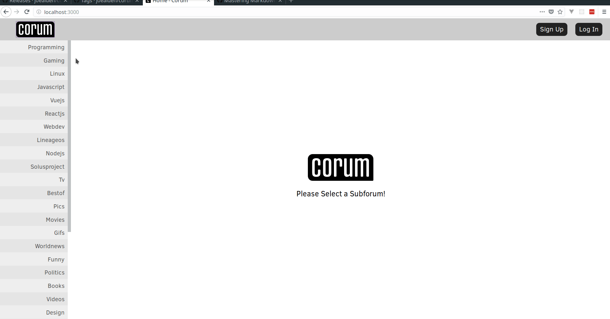
In this prototype, I switched from React to Vue. This change can only be seen by looking at the actual code. I had to convert all of the existing React components over to Vue.
Also in this prototype I implemented a dumb version of the navigation. Each item in the navigation correctly linked to the right subforum page, however the data it was acting on was actually just a mock of the data the API should have been returning. This was because at this stage in development I hadn't even started to code the API. I also implemented a basic subforum page that just read the subforum name from the url and displayed it. This was useful as it ensured that the routing library was working correctly. Another thing that I added was basic signup and login pages. These pages were not connected to anything, and the signup and login buttons did nothing.
Prototype 3
Location: images/gifs/iterations/prototype-3.gif
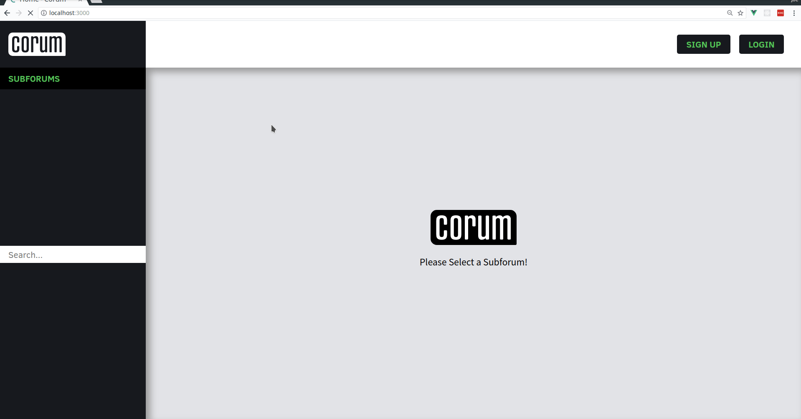
In this prototype I worked on the look and feel of the site as a whole. Instead of using the grey scale colour scheme that the previous prototype was using I used a white, blue and green colour scheme. I also added some drop shadows and animations to give the site depth and make it feel more natural to use. I applied this design to the login and signup pages as well. I think this prototype was important as it made Corum feel a lot more professional and modern.
You can also see that I removed the mock data that I was using in the previous iteration and added a search bar in preparation for implementing the API into the client.
Prototype 4
Location: images/gifs/iterations/prototype-4.gif
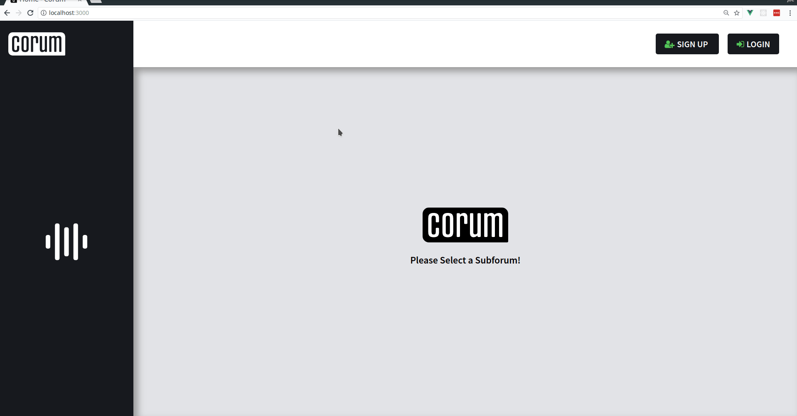
This prototype has a lot less changes that the previous ones. I removed the animations from the site as I thought it made the site feel less responsive. I think that it is more important for the user to access the information they want in the shortest amount of time rather than having a lot of animations.
Also, although you cannot see it visually, I added a lot of code for the client to communicate with the API. The issue at the time was that the API was not quite finished, so it wasn't possible to load the data. The reason for this is explained later in the 'problems experienced' section as it was to do with the fact I hadn't thought about everything I needed to.
Production Build
Location: images/gifs/iterations/production.gif
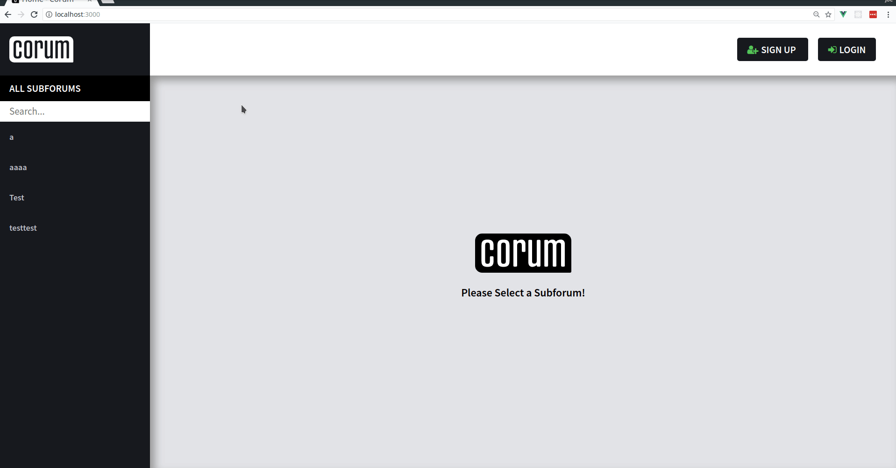
This is what Corum looks like in its current state. Here you can see the client correctly communicating with the API. By this stage all of the success criteria set out had been met. To find out more about the final build of Corum visit the evaluation's testing section where I have recordings for every feature of Corum, showing that it all works as expected.
An Explanation of each Iteration Stage
Due to the fact that I cannot show the iterations visually of non visual development, this section explains these iterations in more detail.
I decided to split up the implementation stage of build Corum up into 3 main parts.
The first stage was to implement the frontend code up to the point until it needed to interface with the API. This meant doing things like working out where things should go on each page and what they should look like.
The second stage was to implement the API. This included writing the code for the signup and login resolvers. Due to the fact that the API and the frontend are independent services I did not need to think that much about the implications of the API design might have on the frontend.
The third stage was to connect the client to the API. This involved writing the code that made queries to the API and made mutations to the data. For example on the signup page, when the user pressed submit, the frontend needed to send a mutation to the API in order to create the account. I also needed to handle how the frontend would handle the data returned from the API, for example if there was an error (Maybe the email address the user entered is already being used).
The following three sub sections will describe each of these stages in more detail.
Implementing a Dumb Frontend (Stage 1)
First of all I needed to develop a dumb frontend for the site. This would mean that I wouldn't have to think about the layout and styling of the site as much when this iteration was complete. Instead I could just focus on the logic of making the site actually function. The first stages of this iteration can be seen in the 1st prototype I made.
This meant that in the following stages I could easily just connect HTML elements such as buttons and links to JavaScript functions.
There was must to test at this stage, all of the page looked how I wanted them to look, and of of the links worked correctly. The majority of the testing for Corum needed to be done when implementing the API and connecting it to the frontend.
Implementing the API (Stage 2)
Next, I needed to implement the API that Corum's client relies on for data. Because I was using Graphcool it meant that I didn't need to worry about setting up things like a database or a web sever, Graphcool handled all of that for me by abstracting them away.
Instead, I had to think about how the data model defined in the design section of this report would interface with the JavaScript code I needed to write to get functionality like signup and login working. This was done by using hook functions and custom resolvers.
The exact code for this iteration stage can be found in the API code analysis section of this report.
To test the API I used a tool called graphql-playground. This tool is
available standalone but it also comes bundles with Graphcool. This meant that I
didn't have to set it up to test the API. When visiting the API endpoint
returned by Graphcool in a web browser it displays the graphql-playground
interface. This interface allows you to make queries and mutations to the API
without writing any code.
The following GIF shows how it works.
Location: images/gifs/iterations/graphql-playground.gif
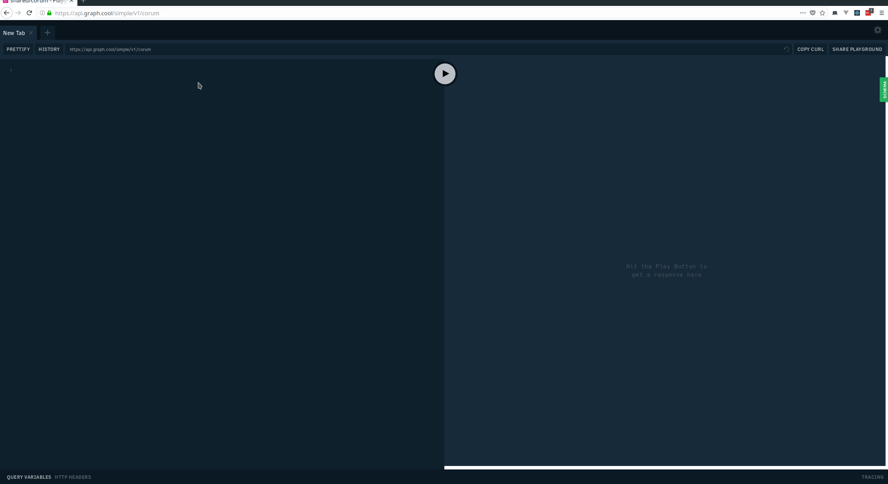
The left hand side of the screen is where you write the query / mutation and the
right hand side of the screen is the result of that query / mutation that is
returned from the server. The play button (|>) in the top middle is pressed to
execute the query / mutation.
For example, I needed to implement a hook function that set the initial vote count of every post to 0 to ensure that the client could fake the amount of up-votes a post had.
To test this I could simply try all of the different cases that the client code provide:
The client doesn't provide a voteCount field:
Location: images/gifs/iterations/post-test-1.gif
The client provides voteCount but it is null:
Location: images/gifs/iterations/post-test-2.gif
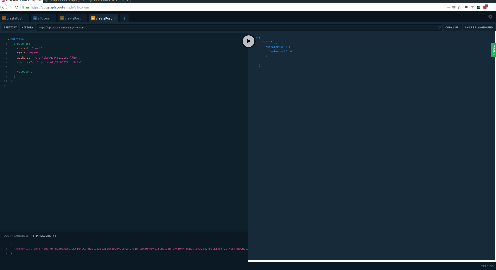
The client provides a voteCount field that is not 0:
Location: images/gifs/iterations/post-test-3.gif
The client provides a voteCount field that is 0:
Location: images/gifs/iterations/post-test-4.gif
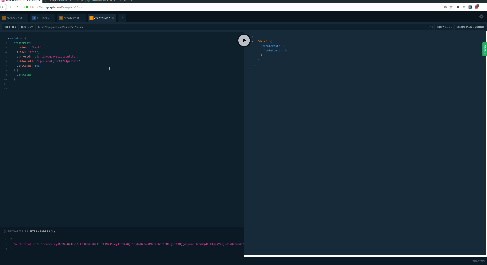
As you can see in all of these examples, voteCount is returned as 0 in all
cases, as intended.
Connecting the Client to the API (Stage 3)
After implementing the API and testing that it worked at expected I needed to connect the frontend and the API together. This meant implementing the following:
- The
Headercomponent changes state on login - The
Navigationcomponent loads in all subforums and changes on login state - The signup page creates a user and logs them in (with validation)
- The login page logs a user in if their details are correct (with validation)
- The subforum page loads the posts from the correct subforum
- The post page loads post details (name, author, content, comments etc.)
- The new post page creates a new post and redirects the user to the new post
- The new subforum page creates a new subforum and updates the navigation
This was all made pretty easy because of graphql-playground. It meant that I
could construct the queries and mutations for the client in
graphql-playground, then once I knew that they did what I wanted them to do I
just converted these queries and mutations into JavaScript code. This meant that
I could be confident that the frontend was fetching the correct data from the
API.
As this was the final iteration stage it meant that I could test everything just by visiting the site in a web browser and checking that everything worked correctly as set out in Corum's success criteria. This testing is shown in great detail in the evaluation section of this report.
User and Stakeholder Feedback
placeholder
Problems experienced
placeholder
Client Problems
- How to manage login state
- How to handle errors
- Updating state based on data mutations
API Problems
- User account creation and authentication
- Setting the initial vote count of a post to 0 on creation
- Ensuring a user could only favorite a subforum once
- Ensuring a user could only vote once on a post
- Figuring out permissions
- Adding extra fields to data types when I realised while developing frontend
Code Analysis
The following sections analyse the final code for both the client and the API of Corum. It is worth noting that I am using modern JavaScript, (Up to ES2017) so if you do not recognise some any of the syntax used, I recommend visiting the following link, https://devhints.io/es6
To find the full source code, visit the following Github links:
Client Analysis
Nuxt configuration (nuxt.config.js)
// For more info, visit https://nuxtjs.org/api/configuration-build
module.exports = {
// Headers of the page
head: {
titleTemplate: '%s - Corum',
meta: [
{ charset: 'utf-8' },
{ name: 'viewport', content: 'width=device-width, initial-scale=1' },
{
hid: 'description',
name: 'description',
content: 'An open, democratic & self governing forum.'
}
],
link: [{ rel: 'icon', type: 'image/png', href: '/favicon.png' }]
},
// CSS globals
css: ['~/assets/styles/globals.styl'],
// Customize the progress bar color
// $nav-hover (Found at '~/assets/styles/variables.styl')
loading: { color: '#53c556' },
// Build configuration
build: {
// Extend the webpack config
extend(config, { isClient, isDev }) {
if (isClient && isDev) {
// Run ESLint on save
config.module.rules.push({
enforce: 'pre',
test: /\.(js|vue)$/,
loader: 'eslint-loader',
exclude: /(node_modules)/
})
}
}
},
// Define modules used.
// For more info, visit https://nuxtjs.org/guide/modules
// @nuxtjs/apollo - Provides vue-apollo + apollo-client
// @nuxtjs/dotenv - Reads .env and merges with process.env
// @nuxtjs/font-awesome - Provides icons
// @nuxtjs/pwa - Adds PWA features like offline support etc.
// Documentation for the modules used here can be found at:
// https://github.com/nuxt-community/awesome-nuxt#modules
modules: [
'@nuxtjs/apollo',
'@nuxtjs/dotenv',
'@nuxtjs/font-awesome',
'@nuxtjs/pwa'
],
// Specify the file where the apollo client config resides
apollo: {
clientConfigs: {
default: '~/apollo/client-configs/default.js'
}
}
}
Please refer to the nuxt.config.js section located near the
top of this document for more information about what this file does and why it
exists.
These are the main section of Corum's Nuxt configuration file:
headcssloadingbuildmodulesapollo
The following sections will describe what Corum uses them for.
head
This is where page headers are defined that will be the same across all pages.
As seen below, an useful property nuxt expose is titleTemplate. This allows
pages to pass their names into a template, so the page title changes between
pages. Corum's title template is '%s - Corum', so for example, a post page
will have its title, followed by '- corum'.
This also includes things such as meta tags for character encoding and site description. Also specified here is the link to the site's favicon.
css
This is where you can specify what CSS files you want to be added to the head of every page, so these styles will be global to the entire site.
Corum's configuration reference a file called globals.styl. It contains a
basic CSS reset, as well as globals such as the base font size and font family.
The .styl file extension is short for stylus. Stylus is a CSS preprocessor.
(You may have heard of SASS, which is another example of a CSS preprocessor) The
fact that I am referencing a .styl file is important because nuxt reads the
file extension, and applies the correct loader to process this file into regular
CSS.
loading
In the GIFs files above that show how the site actually functions, you may have noticed a small green loading bar going across the top of the page when navigating between pages. This is a feature built into nuxt. Nuxt allows you to customise this loading bar with CSS. Corum only changes the color of the bar to match the overall theme.
build
The build property is where Nuxt allows you to extend its functionality. The only thing Corum uses this for is to linting to JavaScript and Vue.
modules
This is where you defined the Nuxt modules that you want to use. Nuxt modules are packages that features to Nuxt just by installing them and telling nuxt to use them.
The modules used by Corum and why they are used can be found in the code comments below.
apollo
This is exposed by the @nuxtjs/apollo module, and requires you to specify
where the Apollo Client configuration file resides.
Apollo Configuration
// https://github.com/nuxt-community/apollo-module
import { ApolloLink } from 'apollo-link'
import { HttpLink } from 'apollo-link-http'
import { InMemoryCache } from 'apollo-cache-inmemory'
export default () => {
// Create a HTTP link to the Graphcool endpoint
const uri = process.env.API_ENDPOINT
const httpLink = new HttpLink({ uri })
// This middleware sends the JWT (if present) that is needed for
// mutations such as 'createPost' or 'createComment', as only logged
// in users are allowed to perform such mutations.
const middlewareLink = new ApolloLink((operation, forward) => {
/*
Due to this being parsed SSR, process.browser must be used to
make sure localStorage is only attempted to be accessed on the
client. This isn't a n issue as no queries or mutations that
require authentication are made on an SSR request of the page.
*/
const token = process.browser
? localStorage.getItem('auth-token')
: undefined
// Set the request headers to include the auth token
operation.setContext({
headers: { authorization: `Bearer ${token}` }
})
return forward(operation)
})
// Add this auth token middleware onto the HTTP link
const link = middlewareLink.concat(httpLink)
// Create an memory cache to be used by Apollo
const cache = new InMemoryCache()
return { link, cache }
}
To find out more about how configuring Apollo client works, visit the url that is at the top of the code block.
As mentioned before, Apollo is used to communicate with Corum's GraphQL API. Before Apollo can communicate the with the API, it needs to be configured. In version 2 of Apollo Client, it was made a lot more modular. The two important things to configure now are Apollo Links and Caches.
Apollo Links allow you to configure how GraphQL queries are handled. A common
Apollo link is apollo-link-http as seen below. This allows you to configure
how queries are sent over HTTP. The apollo-link-http package exposes a class
called HttpLink. As seen below, it expects and object containing the uri of
the API server. In Corum's case, the API endpoint address is fetched from the
.env file located in the root directory of the project. This means that
queries sent through Apollo are now sent to our Graphcool API.
There is also a generic Apollo link in the package apollo-link. This package
exposes a class called ApolloLink. This link allows you to modify the request
before it is sent in any way you like. (Also known as middleware) The reason
Corum needs to modify the request is so that the authentication token (if
present) is sent along with the request, allowing protected queries to be
performed. (Such as creating posts) The authentication token is fetched when the
user is logged in, and it is checked by the API before any protected queries are
performed, so it ensures that only logged in users can perform protected
queries.
Apollo Caches are used to cache data fetched from the server, so that unneeded
network requests are not made. How this works is that Apollo checks the cache
before following the Apollo Link chain. A type of Apollo Cache called
apollo-cache-inmemory is used by corum. This simply means that the cache is
kept in memory on the client, so it is deleted when the user goes off of the
site.
Navigation Component
subforumSearch
// Used to produce the filtered search
subforumSearch() {
const caseInsensitiveInput = this.search.toLowerCase()
return this.allSubforums.filter(subforum =>
subforum.name.toLowerCase().includes(caseInsensitiveInput)
)
}
The subforumSearch function is used as a computed property by Vue. Computed
properties can be used in any place where component data can be used, however
the main difference is that if any of the variables that the computed property
function is referencing change, the return value of the function will get
recomputed and the code that references this computed property will update with
this new value. To find out more about computed properties, visit the following
link: https://vuejs.org/v2/api/#computed
This function is used to calculate what items match the users search term.
As this function has been taken out of context, it will be useful to know what the variables referenced are:
this.searchis a string that is linked to the search box in the navigation and is updated when the contents of the search box changes.this.allSubforumsis an array ofSubforumobjects that has been fetched by Apollo. These objects contain anameproperty.
To make the search case insensitive, the toLowerCase method on the string
prototype is called on the users search term. Then, using the filter method on
the array prototype and the includes method on the string prototype, the
subforums that match the search term are returned from the function.
sortedFavorites
/*
As graphcool doesn't support ordering by nested data, this
computed value sorts the favorites array by subforum names.
*/
sortedFavorites() {
if (this.allFavorites !== undefined) {
// Spread into a new array as sort mutates original array
return [...this.allFavorites].sort((a, b) => {
if (a.subforum.name > b.subforum.name) {
return 1
} else if (a.subforum.name < b.subforum.name) {
return -1
} else {
return 0
}
})
} else {
return undefined
}
}
This is a Vue computed property, refer to the
subforumSearch section for more information.
Graphcool (The API framework I am using) does support ordering, (Which I have taken advantage of when sorting posts on the subforum page) however it currently doesn't support ordering by nested data. (As mentioned in the code comment below) This means that instead of relying on the API to do the sorting work, I have to perform this sorting on the client.
The reason I want the favorites to be sorted alphabetically is because
otherwise, like the All Subforums, it would be harder for the user to find the
subforum they are looking for when just scrolling through the list.
Variable Reference:
this.allFavoritesis an array ofFavoriteobjects that are fetched by Apollo if the user is logged in. These objects contain aSubforumobject with anameproperty.
Firstly, a check is made that the favorites have been fetched from the API, if this wasn't checked, an error would be thrown. It also means that a message can be shown to the user when the data is still loading.
If the favorites data is present, using the sort method on the array
prototype, a new array of Favorite objects is returned sorted by their
subforum.name property.
Post Page
upvoteButtonClick
// Determines what GraphQL mutation to execute based on the vote state
upvoteButtonClick() {
if (this.voteInProgress === false) {
this.voteInProgress = true
if (this.upvoted === true) {
// The user has already upvoted
this.localVote -= 1
this.deleteVote({ id: this.userVoteData.id })
} else if (this.downvoted === true) {
// The user has already downvoted
this.localVote += 2
this.updateVote({ id: this.userVoteData.id, vote: 'VOTE_UP' })
} else {
// The user has not voted
this.localVote += 1
this.createVote({
vote: 'VOTE_UP',
postId: this.$route.params.post,
userId: this.userId
})
}
}
}
As shown in the 'Testing During Development' section, the post page has an
upvote and a downvote button in the top right of the page. These buttons are
bound to onClick event handlers called upvoteButtonClick and
downvoteButtonClick respectively. I am only explaining how the
upvoteButtonClick handler works as the downvoteButtonClick handler is very
similar, it just works in the opposite way. (For example, if the button is
pressed, then a downvote will be registered instead of an upvote)
Variable Reference:
this.voteInProgressensures that only a single vote is being processed at a time.this.upvotedkeeps track of if the user has already upvoted the postthis.downvotedkeeps track of if the user has already downvoted the postthis.localVotekeeps track of the local vote count, this variable is needed because any data fetched from the API is immutable. If Corum relied on the data coming from the server only, then the UI would be slow to update, because an response from the API would be required to update the vote count displayed to the userthis.createVote,this.updateVoteandthis.deleteVoteare functions that send mutations requests to the API, these functions are described in the next code analysis sub section. This functionality is extracted out of the button click handler functions to reduce code duplication and keep the event handlers easier to read at a glance.
Firstly, a check is made to ensure that no vote mutations are in progress. If
any are in progress, then the button click is ignored. The reasoning behind this
check is explain in the variable reference section above. If the check passes,
then the vote mutation starts to execute. To ensure that the user cannot vote
again before the function has finished executing, this.voteInProgress is set
to true.
This function needed to handle the following scenarios:
- If the user hasn't voted already, increment the vote count on the post by 1
- If the user has already upvoted the post, decrement the vote count by 1
- If the user has already downvoted the post, increment the vote count by 2
This means that the function needs to handles the 3 possible branches, and execute the correct code.
createVote
/*
For more info on how mutations work within vue-apollo,
visit https://github.com/Akryum/vue-apollo#mutations
*/
// variables = { vote, postId, userId }
async createVote(variables) {
const postId = this.$route.params.post
try {
await this.$apollo.mutate({
mutation: createVoteMutation,
variables,
update: (store, { data: { createVote } }) => {
const data = store.readQuery({
query: userVoteQuery,
variables: {
postId,
userId: this.userId
}
})
data.allVotes.push({
__typename: 'Vote',
id: createVote.id,
vote: variables.vote
})
store.writeQuery({
query: userVoteQuery,
variables: {
postId,
userId: this.userId
},
data
})
},
optimisticResponse: {
__typename: 'Mutation',
createVote: {
id: 0,
__typename: 'Vote'
}
}
})
// Indicate to the page that the vote has finished execution
this.voteInProgress = false
} catch (error) {
logIfDev('error', error)
}
}
Like the upvoteButtonClick and downvoteButtonClick functions, the 3 vote
mutation functions createVote, updateVote and deleteVote are very similar.
I will only analyse the createVote function.
Variable Reference:
variables, as mentioned at the top of the code block, is expected to be an object withvote,postIdanduserIdproperties. These pieces of data are needed to correctly create the votethis.$apollois a module exposed by thevue-apollopackage I am using for Vue bindings to Apollo. This is available on the global Vue instance, this means that is can be accessed from any.vuefile. It exposes as method calledmutatethat is used to send a mutation to the APIcreateVoteMutationis a GraphQL mutation used to create the useruserVoteQueryis a GraphQL query that returns the data for a users votethis.$route.params.postcontains the postId that can be seen in the browsers URL bar when on a post page. Likethis.$apollo,this.$routeis available on the global Vue instance. However, instead of being exposed byvue-apollo, it is exposed by the router,vue-router.
The whole function is just a call to the mutate function found on
this.$apollo. The mutate function expects an object as an argument.
While the object argument can take more properties, these are the properties I am using:
mutation- The GraphQL mutation that you want to send to the APIvariables- An object of variables that the mutation takes inupdate- The function that is called when data is returned from the APIoptimisticUpdate- An object that will be used in place of the real data before the data is returned from the API. If this property is present, then theupdatefunction passed in will be called twice. Once immediately with theoptimisticUpdateobject passed as thedataparameter of theupdatefunction, and then again whenever the data is returned from the API. This means that the UI can be optimistically updated before the real data from the API is returned. Otherwise there would be a delay between pressing the vote button and the UI updating, which would be a bad user experience.
To show what the update function does, I will explain what happens when it is
called with the optimisticUpdate object. As shown in the update function
signature, the function expects the following parameters:
store- This object is a reference to the Apollo cache that exists in memory. (That was created by theapollo-cache-inmemorypackage as seen in the 'Apollo Configuration' sub section) It exposes two methods that I make use of calledreadQueryandwriteQuery. As evident from their names, thereadQueryfunction takes in a query and queries the cache with it. ThewriteQuerytakes a query and the data to be written to the cache.data- In the case of the first call of theupdatefunction, this is theoptimisticUpdateobject.
The usual flow of the update function is the following:
- Read the data from the cache
- Mutation the read data
- Write the data back to the cache
This function does exactly that. The data is read, the data object is mutated by
pushing the new vote onto the end of the allVotes array, then the mutation
data object is written back to the cache.
Most of the function's body is wrapped in a try / catch statement. This is
needed as if any errors occur, the function will gracefully handle them. For
example, if the API is not running, then an error will be logged to the console
if the app is in development mode, using the logIfDev function that will be
explained later on.
submitComment
async submitComment() {
const author = this.$store.state.username
const { comment: content } = this
const id = this.$route.params.post
// Clears user input from textarea
this.comment = ''
try {
await this.$apollo.mutate({
mutation: createCommentMutation,
variables: {
author,
content,
id
},
update(store, { data: { createComment: commentData } }) {
const data = store.readQuery({
query: postQuery,
variables: { id }
})
const newComment = {
__typename: 'Comment',
id: commentData.id,
author: commentData.author,
content: commentData.content
}
data.Post.comments.push(newComment)
store.writeQuery({
query: postQuery,
variables: { id },
data
})
},
optimisticResponse: {
__typename: 'Mutation',
createComment: {
__typename: 'Comment',
id: 'loading',
author,
content
}
}
})
// scroll to bottom of page when comment is inserted
const main = document.getElementById('main-content-wrapper')
main.scrollTop = main.scrollHeight
} catch (error) {
logIfDev('error', error)
}
}
Like the upvoteButtonClick function, this is also an event handler. This
function is called when the user clicks on the 'Post Comment' button.
Variable Reference:
this.$store.state.usernameis a reference to the user's username.this.$storeis another global Vue instance property. This is exposed by thevuexpackage. This allows me to store global state in Corum like user data.this.commentis a string that is linked to the comment textarea and is updated when the contents of the textarea changes.this.$route.params.postis a reference to the post's ID. Thethis.$routeglobal is explained the 'createVote' subsection above.createCommentMutationis a GraphQL mutation that creates a commentpostQueryis a GraphQL query that fetches a post's data
Just like the createVote function shown in the 'createVote' sub section above,
this function is mainly just a call to the mutate function found on
this.$apollo. To avoid repetition, I will not explain how this function works
again. If you don't know how it works, read the above 'createVote' sub section.
This function works in a very similar way to the createVote function. First,
the data required for the mutation is saved into local variables. After this,
the contents of this.comment is set to an empty string. This is done near the
start of the function to keep the UI feeling snappy.
Then the mutation is made. The mutation is very similar to the createVote
function. The update function pushes the new comment into the post's comments
array inside of Apollo's cache. After this has happened, the user is
automatically scrolled to the bottom of the page to see that their new comment
has appeared in the comments section.
Just like the createVote function, error handling is also present.
New Post Page
submitPost
async submitPost() {
const authorId = this.$store.state.userId
const { postTitle: title, postContent: content, Subforum: { id } } = this
/*
For more info on how mutations work within vue-apollo,
visit https://github.com/Akryum/vue-apollo#mutations
*/
try {
const { data: { createPost } } = await this.$apollo.mutate({
mutation: createPostMutation,
variables: {
authorId,
title,
content,
id
}
})
const { subforum } = this.$route.params
const postId = createPost.id
this.$router.push(`/subforum/${subforum}/post/${postId}`)
} catch (error) {
this.$router.push(`/error`) // TODO: create actual error page
}
}
Like the submitComment function, this is also an event handler. This function
is called when the user clicks on the 'Create Post' button on the 'New Post'
page. Also, instead of submitting a comment, it submits a post.
Variable Reference:
this.$store.state.userId- explained in thesubmitCommentsub sectionthis.postTitleis a string that is linked to the title text box and is updated when the contents of the text box changesthis.postContentis a string that is linked to the content textarea and is updated when the contents of the textarea changesthis.Subforumcontains the data of the subforum that the post is wanting to be created oncreatePostis a GraphQL mutation to create a new postthis.$route.params.subforumis the ID of the subforum that the post is wanting to be created onthis.$router.pushis a function that redirects the user to a given url.
This function is a lot simpler than previous mutate function calls. This is
because when the new post is created, the user is redirected to the new post's
page, where the new post's data is fetched. This means that the cache doesn't
need to be manually updated as the redirect will trigger GraphQL queries that
will update the cache.
Unlike previous error handling code, this function redirects the user to an error page.
I have left out a section explaining the newSubforum function on the 'New
Subforum' page because it is very similar, if not even more simple that this
function.
Login Page
login
async login() {
// Renders the loading submit button
this.loading = true
const { email, password } = this
/*
For more info on how mutations work within vue-apollo,
visit https://github.com/Akryum/vue-apollo#mutations
*/
try {
const { data: { authenticateUser } } = await this.$apollo.mutate({
mutation: authenticateUserMutation,
variables: {
email,
password
}
})
const { id, username, token } = authenticateUser
this.$store.commit('saveUserData', { id, username, token })
// Returns the user to the page they were on before
// TODO: If user was on signup before, redirect to home
this.$router.back()
} catch ({ message }) {
// Renders the normal submit button
this.loading = false
// Display the error to the user in an alert box
alertError(message)
}
}
This function is an event handler that is triggered when the users clicks on the
'Login' button on the login page. Due to the fact that the signup function for
the signup page is almost identical, I will not be analysing it.
Variable Reference:
this.loadingkeeps track of if the client is currently waiting for a response from the API. It is used to disable the 'Login' button if it is set totrueso that the user knows that page is doing something, and so that the user doesn't make multiple authentication requests for no reason.this.emailis a string that is linked to the email text box and is updated when the contents of the text box changesthis.passwordis a string that is linked to the password text box and is updated when the contents of the text box changesauthenticateUseris a GraphQL mutation that authenticates a userthis.$store.commitis a function that allows you to mutate the global statethis.$router.backis a function that send the user back to the previous page that they were on.
This function is like many other event handlers on the site, it is basically just a GraphQL mutation call.
If the authentication succeeds, (The user has entered the correct details) the user's id, username and auth token is extracted from the API response and save into the apps global state. After this, the user is redirected back to the previous page they were on.
If the authentication fails, (The user has entered incorrect details) the
catch block is executed. this.loading is set to false so that the user can
correct the incorrect data they entered and resubmit the form. Then after this,
the error message returned from the API is cleaned up and displayed to the user
through the use of alertError, which will be explained later on.
Signup Page
correctDetails
// Ensures that all input fields have been entered correctly
correctDetails() {
const emailEntered = this.email !== ''
const usernameEntered = this.username !== ''
const password1Entered = this.password1 !== ''
const password2Entered = this.password2 !== ''
const passwordsEntered = password1Entered && password2Entered
const passwordsMatch = this.password1 === this.password2
return (
emailEntered && usernameEntered && passwordsEntered && passwordsMatch
)
}
This function is used in the signup form to perform input validation on the client side, so that the API will have not have to deal with as much processing.
Variable Reference:
this.emailis a string that is linked to the email text box and is updated when the contents of the text box changesthis.usernameis a string that is linked to the username text box and is updated when the contents of the text box changesthis.password1is a string that is linked to the first password text box and is updated when the contents of the text box changesthis.password2is a string that is linked to the second password text box and is updated when the contents of the text box changes
This function returns a boolean that is used in the user interface to
conditionally render a clickable signup button. If the function returns false,
the signup button will be greyed out. If the function returns true, the signup
button will be clickable.
As this is a Vue computed property, the return value will be recalculated every time a dependency changes. (Any of the form fields)
This function works by creating a boolean from each input field. All of the fields work in the same way, so I will only give one example.
const emailEntered = this.username !== ''
If this.username is empty, emailEntered will evaluate to false.
The only differing piece of code in this function is where the password fields are also checked to contain the same input. They must equal, as the user is expected to input the exact same password.
Utility Functions
stringToBoolean
// Helper function to handle process.env booleans
const stringToBoolean = stringBool => {
if (stringBool === 'true') {
return true
} else if (stringBool === 'false') {
return false
} else {
throw new Error(
`Expected a string of 'true' or 'false', but got ${stringBool}`
)
}
}
export default stringToBoolean
This function is used to convert the string literals 'true' and 'false' into
their actual boolean values, true and false. This function is used when
importing data from the configuration file, as everything is treated as a
string.
The logic of the function is very easy to follow. If the argument to the
function is the string 'true', the function will return the boolean true. If
the argument to the function is the string 'false', the function will return
the boolean false. There is also a final check if the other conditions do not
match. For this case, a helpful error is thrown.
logIfDev
import stringToBoolean from '~/utils/stringToBoolean'
// Only logs to console if process.env.PROD is false
const logIfDev = (logType, message) => {
if (stringToBoolean(process.env.PROD) === false) {
console[logType]('test')
}
}
export default logIfDev
This function conditionally logs messages to the console, depending on the
configuration option PROD. If the site is in development mode, the messages
passed to the function will be logged. If the site is in production mode, the
messages passed to the function will not be logged, as the end user does not
need to see these debug / error messages.
Variable Reference:
process.env.PRODis the configuration option that is used to change if the site is in development or production mode. Theprocessglobal is exposed by Nuxt, and theenvproperty is exposed by the Nuxt module@nuxtjs/dotenv.
This functions takes a logType and a message as arguments. The logType can
be any valid log method on the console global, such as log, warning, or
error. These methods show the severity of messages logged to the console. The
message is expected to be a string.
alertError
// Formats a GraphQL error to display to the user
export const formatError = errorMessage => {
const colonIndex = errorMessage.lastIndexOf(':')
const cleanedMessage = errorMessage.substring(
colonIndex + 2,
errorMessage.length
)
return cleanedMessage
}
const alertError = errorMessage => {
const cleanedMessage = formatError(errorMessage)
alert(`Error: ${cleanedMessage}`)
}
export default alertError
This function is used in the signup and login pages to convert errors returned from the API into a readable format, and then display them to the user.
There are two parts of this code, the formatError function and the
alertError function. The formatError actually performs the tidying up of the
error, and the alertError calls the formatError function and displays it.
The reason this function is needed is because the error message returned from the API is for debugging, and contains data that is not useful to the end user.
Global Store Configuration (Vuex)
import { Store } from 'vuex'
import Vue from 'vue'
// For more info, visit https://nuxtjs.org/guide/vuex-store/
/*
Vue.set() is used to get around Vue's inability to detect the
state change.
*/
export default () => {
return new Store({
// Only allow state mutations through the defined mutation methods
strict: true,
/*
Initial state is fetched in a hook that executes on the client.
Fetch can be found at '~/layouts/default' or '~/layouts/error'.
*/
state: {
userId: undefined,
username: undefined
},
mutations: {
logout(state) {
localStorage.removeItem('user-id')
localStorage.removeItem('username')
localStorage.removeItem('auth-token')
Vue.set(state, 'userId', localStorage.getItem('user-id'))
Vue.set(state, 'username', localStorage.getItem('username'))
},
saveUserData(state, { id, username, token }) {
localStorage.setItem('user-id', id)
localStorage.setItem('username', username)
localStorage.setItem('auth-token', token)
Vue.set(state, 'userId', localStorage.getItem('user-id'))
Vue.set(state, 'username', localStorage.getItem('username'))
},
updateUserState(state) {
Vue.set(state, 'userId', localStorage.getItem('user-id'))
Vue.set(state, 'username', localStorage.getItem('username'))
}
}
})
}
This file is used to configure the state management library that I am using,
Vuex. The reason Corum needs a global state management library is because the
user details need to be available across the entire app. Instead of calling out
to the localStorage API every time Corum needs the user information, it is
quicker to keep this information in memory.
Nuxt expects this file to export a function that returns the store to use in the
application. the Store class is exposed by the Vuex library, and expect a
configuration object as a parameter. This object can contain many properties,
but I will only explain the ones that I am using.
strict- As explained in the comment in the code block, if set totrue, this prevents the state from being changed directly without using the methods defined in themutationsproperty.state- This is an object that is used to initialise the state. Corum only uses two state properties,userIdandusername.mutations- This is a object of functions that can be called to mutate thestateobject, as well as perform other operations, such as setting or removing data from the browserslocalStorage.
There are three mutation methods in Corum's store. logout, saveUserData and
updateUserState. logout removes saved data from the browsers localStorage
as well as from the store. This mutation is called when the logout button is
pressed in the sites header. saveUserData updates the browsers localStorage
and the store with the data passed in. This mutation is called when logging the
user into the site, or after a user signs up (As it also logs them in).
updateUserState updates the state by fetching the data from the browser's
localStorage. This is needed as localStorage persists in the browser across
visits, whereas Corum's global state cannot persist. Upon every visit, this
mutation is called. This means that a user can be kept logged into Corum across
visits.
API Analysis
API Schema
The schema of the API was created during the design phase of the project. However, so it is easier to understand the code in this section, I will repeat it here:
type User @model {
id: ID! @isUnique
username: String! @isUnique
email: String! @isUnique
password: String!
posts: [Post!]! @relation(name: "UserToPost")
votes: [Vote!]! @relation(name: "UserToVote")
favorites: [Favorite!]! @relation(name: "UserToFavorite")
}
type Subforum @model {
id: ID! @isUnique
url: String! @isUnique
name: String!
posts: [Post!]! @relation(name: "SubforumToPost")
favorites: [Favorite!]! @relation(name: "SubforumToFavorite")
}
type Favorite @model {
id: ID! @isUnique
user: User! @relation(name: "UserToFavorite")
subforum: Subforum! @relation(name: "SubforumToFavorite")
}
type Post @model {
id: ID! @isUnique
subforum: Subforum! @relation(name: "SubforumToPost")
title: String!
author: User! @relation(name: "UserToPost")
content: String!
voteCount: Int
createdAt: DateTime!
comments: [Comment!]! @relation(name: "PostToComment")
votes: [Vote!]! @relation(name: "PostToVote")
}
type Comment @model {
id: ID! @isUnique
post: Post! @relation(name: "PostToComment")
author: String!
content: String!
}
type Vote @model {
id: ID! @isUnique
post: Post! @relation(name: "PostToVote")
user: User! @relation(name: "UserToVote")
vote: VoteType!
}
enum VoteType {
VOTE_UP
VOTE_DOWN
}
Here is a graphical representation of the schema above:
Permission Configuration
# Where 'authenticated: true' is present in an operation,
# the client must pass along their JWT auth token in the
# request headers. (In the form -> Authorization: 'Bearer ${TOKEN}')
permissions:
# User Permissions
# Allows access to User from Post
# Only the username field is made queryable. This means
# that malicious users cannot query for someones elses
# information such as their password, id, or email.
- operation: User.read
fields: [username]
# Subforum Permissions
- operation: Subforum.create
authenticated: true
- operation: Subforum.read
# Favorite Permissions
- operation: Favorite.create
authenticated: true
- operation: Favorite.read
- operation: Favorite.delete
authenticated: true
# Post Permissions
- operation: Post.create
authenticated: true
- operation: Post.read
# Comment Permissions
- operation: Comment.create
authenticated: true
- operation: Comment.read
# Vote Permissions
- operation: Vote.create
authenticated: true
- operation: Vote.read
- operation: Vote.update
authenticated: true
- operation: Vote.delete
authenticated: true
# Relation Permissions
- operation: SubforumToPost.connect
authenticated: true
- operation: PostToComment.connect
authenticated: true
- operation: UserToPost.connect
authenticated: true
- operation: UserToVote.connect
authenticated: true
- operation: PostToVote.connect
authenticated: true
- operation: UserToFavorite.connect
authenticated: true
- operation: SubforumToFavorite.connect
authenticated: true
As mentioned in the 'How Graphcool Works' section,
graphcool needs a configuration file called graphcool.yml. Most of this file
is just boilerplate to link the below hook functions into graphcool, however a
very important part of this file is the permissions section.
This section allows you to define exactly who can do what with the API. This is crucial to the proper functioning of Corum as it stops non authenticated users from doing things like creating posts, creating comments and voting on posts.
This configuration file is written in yml.
So in this file, permissions is a list of objects. Each object in the
permissions array specifies the operation to configure. The operations that
can be configured are derived from the API schema. (Linked above)
For example, The Vote data type found in the schema can have the following
operations configured:
Vote.createVote.readVote.updateVote.delete
These operations are found on every data type in the schema. (Which are CRUD
operations) You can also specify permissions for relations. This is important
because creating a relationship between data types means that both data type
instances are mutated. For example, the following operations can be specified
for the UserToPost relation which links a user to the post they created:
UserToPost.connectUserToPost.Disconnect
If a certain operation is not specified, (for example, there is not
Favorite.update operation in this configuration) then nothing (expect hook
functions given root tokens) can perform this operation.
If an object in the permissions section specifies an authenticated property
of true, the operation can only be performed by authenticated users (Users
that are logged in)
If an object in the permission section specifies a field property, then
operation is restricted to only the values found in the array passed to it. For
example, in Corum's API, anyone can read from the Username data type, however
they can only read the username field.
Hook Functions
userAndSubforumIsUnique
import { fromEvent } from 'graphcool-lib'
import { makeRequest } from '../../utils/common'
/*
This is a hook function that executes every time before a favorite is created.
It ensures that only 1 favorite of a subforum by a single user can happen.
*/
const favoriteQuery = `
query FavoriteQuery($userId: ID!, $subforumId: ID!) {
allFavorites(
filter: { AND: [{ user: { id: $userId } }, { subforum: { id: $subforumId } }] }
) {
id
}
}
`
export default async event => {
try {
// Create Graphcool API (based on https://github.com/graphcool/graphql-request)
const api = fromEvent(event).api('simple/v1')
// Retrieve payload from event
const { data } = event
const { userId, subforumId } = data
const { allFavorites } = await makeRequest(api, favoriteQuery, {
userId,
subforumId
})
if (allFavorites.length === 0) {
return { data }
} else {
return { error: 'This user has already favorited this subforum' }
}
} catch (error) {
return { error }
}
}
As mentioned in the comment at the top of this file, This hook function ensures
that only 1 favorite of a subforum by a single user can happen, and it is run
every time before a favorite is created. There is also a hook function called
userAndPostIsUnique is very similar. Instead of ensuring that only unique
favorites can be added, it ensures that only unique votes can be made on a post.
As this hook function is so similar, I will only analyse this hook function.
Variable Reference:
favoriteQueryis the GraphQL query used to check if the user has already favorited of this subforum.eventthis is an object containing all of the information about the query or mutation event we are hooking into.fromEventis a function exposed by the librarygraphcool-libthat constructs a GraphQL client from theeventdata passed into the function. This allows us to send queries and mutations to the API from within the API code.makeRequestis an abstraction of a function provided bygraphcool-libthat allows us to send queries and mutations to the API. The exact implementation of this function is described later on.
First, fromEvent and makeRequest are imported so that they can be used in
this file. Next, we export a function that expects the event argument. The
reason we do this is because graphcool expects hook function files to export a
function that it can call when needed.
Within this function, using the fromEvent function, a reference to the API is
created from the event data and assigned to the variable api. This variable
will be passed into the makeRequest function so that it knows what API to make
the request to.
Next, the data the client submitted to the API is extracted from the data
property of the event argument. For this hook function, we extract userId
and subforumId. Then, a call to the makeRequest function is made, passing in
the API reference created earlier, the GraphQL query that we want to execute,
along with the variable needed to perform the query. In this case, both the
userId and subforumId are passed as variables to the query.
Once the query has successfully been executed, the function will return the data
response. In this case, we are only interested in the allFavorites value that
is returned. This is an array of Favorite objects that belong to the user and
match the subforum they are attempting to create a favorite for. This means that
if the array has any Favorite objects in it, the user has already favorited
this subforum.
This check is made by checking if the length of the array is 0. (empty) If the array is empty, then the user has not favorited this subforum already, so they should allow to favorite it. In this case, the data submitted by the user is saved to the database. If the length of the array is anything other than 0, then user should not be allowed to create a favorite. An error is returned to the user and the data is not saved.
initVoteCount
// Ensures that when a post is created, the vote Count is set to 0
export default event => {
const { data } = event
data.voteCount = 0
return { data }
}
This is the simplest hook function used in Corum. As mentioned in the code
comment, when a Post is created, the voteCount field on it is set to 0. This
is so that malicious users cannot initialise a post with however many votes they
want.
updateVoteCountOnVoteCreation
import { fromEvent } from 'graphcool-lib'
import {
VOTE_COUNT_TO_DELETE_POST,
makeRequest,
deleteAllVotesOnPost,
postIdFromVoteQuery,
currentPostVoteCount,
getAllVoteIdsOnPost,
deleteVote,
deletePost,
updatePost
} from '../../utils/common'
/*
This is a hook function that executes every time after a vote is created.
It updates the voteCount field on the post to reflect the vote creation.
Also, if the new vote count is equal or less than the VOTE_COUNT_TO_DELETE_POST
constant, then the post will be deleted (The automated management system)
*/
export default async event => {
try {
// Create Graphcool API (based on https://github.com/graphcool/graphql-request)
const api = fromEvent(event).api('simple/v1')
// Retrieve payload from event
const { data } = event
const voteId = data.id
const voteType = data.vote
const { Vote } = await makeRequest(api, postIdFromVoteQuery, { voteId })
const postId = Vote.post.id
const { Post } = await makeRequest(api, currentPostVoteCount, { postId })
const oldVoteCount = Post.voteCount
let newVoteCount
if (voteType === 'VOTE_UP') {
newVoteCount = oldVoteCount + 1
} else if (voteType === 'VOTE_DOWN') {
newVoteCount = oldVoteCount - 1
} else {
return Promise.reject('voteType is invalid or is not defined')
}
if (newVoteCount <= VOTE_COUNT_TO_DELETE_POST) {
await deleteAllVotesOnPost(api, postId)
return await makeRequest(api, deletePost, { postId })
} else {
return await makeRequest(api, updatePost, { postId, newVoteCount })
}
} catch (error) {
return { error }
}
}
As mentioned at the top of this file, this hook function executes every time
after a Vote is created. It updates the voteCount field on the post to
reflect the vote creation. Also, if the new vote count is equal or less than the
VOTE_COUNT_TO_DELETE_POST constant, then the post will be deleted (The
automated management system)
As this check has to be made on every possible CRUD operation that may modify
the overall vote count, there are also hook functions for when a vote is updated
or deleted called updateVoteCountOnVoteUpdate and
updateVoteCountOnVoteDeletion respectively. These hook functions are very
similar, so I will only be analysing the 'creation' version of the hook
functions as shown above.
Variable Reference:
eventthis is an object containing all of the information about the query or mutation event we are hooking into.fromEventis a function exposed by the librarygraphcool-libthat constructs a GraphQL client from theeventdata passed into the function. This allows us to send queries and mutations to the API from within the API code.makeRequestis an abstraction of a function provided bygraphcool-libthat allows us to send queries and mutations to the API. The exact implementation of this function is described later on.deleteAllVotesOnPostis a function that as the name suggests, deletes all votes on a post. The implementation of this function is described later on.postIdFromVoteQueryis GraphQL query that fetches the post's ID that a vote was made on.currentPostVoteCountis a GraphQL query that fetches the the current vote count of a post.getAllVoteIdsOnPostis a GraphQL query that fetches all votes that exist on a post.deleteVoteis a GraphQL mutation that deletes a vote.deletePostis a GraphQL mutation that deletes a post.updatePostis a GraphQL mutation that updates a post with a new post count.
Like the first hook function shown in this section, this function imports what it needs and exports a function for graphcool. Also like the first hook function, a reference to the API is created and the user data is extracted.
This time, voteId and voteType are extracted from the data object. Next, a
request is made to get the post ID using the voteId variable. When the API
responds, the post ID fetched is used to fetch the current vote count on that
post.
Then, depending on how the user voted, (determined by the contents of the
voteType variable) A new vote count is created. If the user upvoted the post,
the vote count is increment by 1. If the user downvoted the post, the vote count
is decremented by 1. There is also error handling if they somehow submitted an
incorrect vote type.
If voteType was defined, the function continues and goes on to update the post
data stored in the database. This is where the automated management system
works. If the new vote count is less than or equal to the defined threshold
stored in VOTE_COUNT_TO_DELETE_POST, the post is deleted along with all of the
votes that were linked to it. Otherwise, the post is updated with the new vote
count.
Resolvers
Resolvers are the most powerful way to extend graphcool. They make it so that you can add extra queries and mutations to the API. In the case of Corum, only two custom resolvers are needed. One to sign up users and one to authenticate users.
signup
import { fromEvent } from 'graphcool-lib'
import * as bcryptjs from 'bcryptjs'
import * as validator from 'validator'
import { makeRequest } from '../../utils/common'
const userQuery = `
query UserQuery($email: String!, $username: String!) {
allUsers(filter: { OR: [{ email: $email }, { username: $username }] }) {
id
email
username
}
}
`
const createUserMutation = `
mutation CreateUserMutation(
$username: String!
$email: String!
$passwordHash: String!
) {
createUser(username: $username, email: $email, password: $passwordHash) {
id
}
}
`
export default async event => {
try {
// Create Graphcool API (based on https://github.com/graphcool/graphql-request)
const graphcool = fromEvent(event)
const api = graphcool.api('simple/v1')
// Retrieve payload from event
const { username, email, password } = event.data
// Check is email is valid
if (validator.isEmail(email) === false) {
return { error: 'The email address entered is not valid' }
}
// Fetch all users that match the users input (if any)
const { allUsers } = await makeRequest(api, userQuery, { email, username })
// If no users exists with the same details, create the user
if (allUsers.length === 0) {
const SALT_ROUNDS = 10
// Generate the password hash that will be stored in the DB
const passwordHash = await bcryptjs.hash(password, SALT_ROUNDS)
// Create the user
const { createUser } = await makeRequest(api, createUserMutation, {
email,
username,
passwordHash
})
// Generate auth token
const { id } = createUser
const token = await graphcool.generateAuthToken(id, 'User')
// Return the payload the user asked for
return {
data: {
id,
token
}
}
}
// If any users do exist, throw the correct informative error
if (
allUsers.length === 2 ||
(allUsers[0].email === email && allUsers[0].username === username)
) {
return { error: 'The email address and username are in use' }
} else if (allUsers[0].email === email) {
return { error: 'The email address is in use' }
} else if (allUsers[0].username === username) {
return { error: 'The username is in use' }
} else {
return { error: 'An unknown error occurred' }
}
} catch (error) {
return { error }
}
}
This is the resolver that is used to create a new user account.
Variable Reference:
eventthis is an object containing all of the information about the query or mutation event we are hooking into.fromEventis a function exposed by the librarygraphcool-libthat constructs a GraphQL client from theeventdata passed into the function. This allows us to send queries and mutations to the API from within the API code.makeRequestis an abstraction of a function provided bygraphcool-libthat allows us to send queries and mutations to the API. The exact implementation of this function is described later on.bcryptjsis a hashing library implementing the bcrypt hashing function design. In this resolver, only thehashfunction exposed by it is used. The use of this function will explained below.validatoris a library that can validate many types of data such as emails, passwords, credit card numbers etc. In this resolver, only theisEmailfunction is used.userQueryis a GraphQL query that fetches a users details. (Their account ID, email and username)createUserMutationis a GraphQL mutation that creates a user.
Like the first hook function shown in this section, this function imports what it needs and exports a function for graphcool. Also like the hook functions, a reference to the API is created and the user data is extracted.
This time, username, email and password are extracted from the data
object. Next, using the isEmail function found in the validator library, the
email the user entered is checked to be valid. Internally, the isEmail
function is probably using regular expressions to ensure that it contains things
such as an @ symbol etc. The isEmail function returns a boolean value. If it
returns true, the email passed to it is valid. If it returns false, the
email passed to it is not valid. In this case, an error is returned telling the
user that 'The email address entered is not valid'.
Next, a request is made using the userQuery query passing in the email and
username the user entered. This will return an array of User objects that have
either the same email or username that the user inputted. If the array returned
is empty, (length equals 0) then no users exists with either the same email or
username. This means that a new account can be created with these details.
First, a variable called SALT_ROUNDS is initialised to the value 10. This is
created because the bcrypt hashing function has a built in salt. This is helpful
for security reasons as it means that passwords hashed with bcrypt can easily be
protected against rainbow table attacks.
Then the hash is created from the password with the hash function. This
expects two arguments. The first argument being the string to hash, and the
second being the number of times to run the salt. Once the function finishes,
the function returns the hash.
Next, a request is made using the createUserMutation mutation passing in the
email and the username the user entered, as well as the newly created password
hash. This mutation will create a new user record with these details.
After that, we extract the user's ID from the above mutation response. Then we
generate an authentication token for the user using the generateAuthToken on
the graphcool object that was created using the fromEvent function earlier.
This token will allow the user perform protected actions such as creating posts
etc.
Then finally, we return the data the user wanted.
In the case that the array returned from the userQuery request is not empty,
this means that a user exists with some of the same data the user entered. In
order to return a useful error message to the user, a few checks are made.
These checks are pretty self explanatory, however, I will list the cases that these checks cover:
- When both the username and password are in use, then the following could be
possible:
- There are 2 separate accounts, one with the same email and another with the same username
- There is 1 account with the same email and the same username
- When only the email is in use, there could only be 1 account with the same email
- When only the username is in use, there could only be 1 account with the same username
- There is also an else statement at the end in case something that I haven't thought of occurs
Also, if any other error occurred in the function, this is caught with the
surrounding try / catch statement, then returned to the user.
authenticate
import { fromEvent } from 'graphcool-lib'
import * as bcryptjs from 'bcryptjs'
import { makeRequest } from '../../utils/common'
const userQuery = `
query UserQuery($email: String!) {
User(email: $email) {
id
password
username
}
}
`
export default async event => {
try {
// Create Graphcool API (based on https://github.com/graphcool/graphql-request)
const graphcool = fromEvent(event)
const api = graphcool.api('simple/v1')
// Retrieve payload from event
const { email, password } = event.data
// Check if a user exists with the email entered
const { User } = await makeRequest(api, userQuery, { email })
if (!User) {
return { error: 'Invalid credentials' }
}
// Check if the user entered the correct password for the user
const passwordIsCorrect = await bcryptjs.compare(password, User.password)
if (!passwordIsCorrect) {
return { error: 'Invalid credentials' }
}
// Generate auth token
const { id, username } = User
const token = await graphcool.generateAuthToken(id, 'User')
// Return the payload the user asked for
return {
data: {
id,
username,
token
}
}
} catch (error) {
return { error }
}
}
This is the resolver that is used to authenticate users that have already
created an account. (Through the signup resolver)
Variable Reference:
eventthis is an object containing all of the information about the query or mutation event we are hooking into.fromEventis a function exposed by the librarygraphcool-libthat constructs a GraphQL client from theeventdata passed into the function. This allows us to send queries and mutations to the API from within the API code.makeRequestis an abstraction of a function provided bygraphcool-libthat allows us to send queries and mutations to the API. The exact implementation of this function is described later on.bcryptjsis a hashing library implementing the bcrypt hashing function design. In this resolver, only thecomparefunction exposed by it is used. The use of this function will explained below.userQueryis a GraphQL query that fetches a users details. (Their account ID, username and password)
Like the first hook function shown in this section, this function imports what it needs and exports a function for graphcool. Also like the hook functions, a reference to the API is created and the user data is extracted.
This time, email and password are extracted from the data object. Next, a
request is made using the userQuery query to fetch the users details from the
email address the user inputted. When the API responds, a check is made to
ensure that a user with the email the user typed in actually exists. If a user
doesn't exist, a generic 'Invalid Credentials' error is thrown. This means
that the API sends back this error message to the client for it to display it to
the user.
If a user does exist with the email the user specified, then we can continue to
make further checks. Next, using the bcryptjs.compare function, the password
the user entered is checked against the hash that was fetched earlier from the
database. The compare function takes two arguments. The first argument being
the raw password that hasn't been hashed. The second argument being the password
to check against that has been hashed. Internally, the function hashes the
password and then compares it against the second argument. If they match, the
function will return true, if the hashes don't match, the function will return
false.
This comparison function is asynchronous, so we must await the return value.
Once the function returns the boolean value, another check is made. If the
function returned false, meaning the password the user entered wasn't correct,
then the same generic 'Invalid Credentials' error. The reason we throw the
same error on both cases is because it makes it harder for an attacker to gain
unauthorised accessed to another users account. This is because they can't tell
if the user or password is the thing they have got incorrect.
If a user exists with both the email and password the user specified, we have a
high degree of confidence that the user is who they say they are. This means
that we can start to construct the information to return to the user. First, we
extract the user's ID and username off of the User object. Then we generate an
authentication token for the user using the generateAuthToken on the
graphcool object that was created using the fromEvent function earlier. This
token will allow the user perform protected actions such as creating posts etc.
Then finally, we return the data the user wanted. Also, if any other error
occurred in the function, this is caught with the surrounding try / catch
statement, then returned to the user.
Utility Functions and Constants
VOTE_COUNT_TO_DELETE_POST
export const VOTE_COUNT_TO_DELETE_POST = -1
This number determines the amount of votes required for the post to be deleted by the automatic post management system.
makeRequest
/*
A wrapper around the fromEvent(event).request that is provided
by 'graphcool-lib' to handle errors in query responses.
*/
export const makeRequest = async (api, query, variables) => {
const queryResult = await api.request(query, variables)
if (queryResult.error) {
return Promise.reject(queryResult.error)
} else {
return queryResult
}
}
As explained in the code comment, this is simply a wrapper around the function
request that is on the object returned by the fromEvent function. The reason
this function was created was so that I didn't have to rewrite the same error
checking functionality with every request made.
It accepts the following arguments:
apiis a reference to the API object created from thefromEventfunctionqueryis the GraphQL query or mutation to execute against the APIvariablesis an object of variables that are used in the query or mutation
It returns a promise that is either resolved with the result, or rejected with the error.
deleteAllVotesOnPost
/*
Currently, the CRUD API generated by graphcool does not expose a
query that allows you to update or delete multiple data records at
once.
It looks like this feature is coming in the graphcool 1.0 release.
https://github.com/graphcool/framework/issues/81
In the meantime, this function will be used to delete all the Votes
on a Post record. This is required because graphcool doesn't allow
you to delete records that would leave other records orphans.
In the case of the Post type, if it was deleted, it would leave the
Vote records that reference the Post, orphans. To allow us to delete
a post, we must first delete the Votes that reference it.
*/
export const deleteAllVotesOnPost = async (api, postId) => {
const { allVotes } = await makeRequest(api, getAllVoteIdsOnPost, { postId })
const voteIdList = allVotes.map(vote => vote.id)
return await Promise.all(
voteIdList.map(voteId => {
return makeRequest(api, deleteVote, { voteId })
})
)
}
The reason for this function is best explained in the code comment above.
Variable Reference:
getAllVoteIdsOnPostis a GraphQL query that gets all theVoteobject IDs that are associated with the post specified.
It accepts the following arguments:
apiis a reference to the API object created from thefromEventfunctionpostIdis the post's ID to delete the votes on
It returns a promise that is resolved with the array of the deleted vote IDs.
First, a request is made using the getAllVoteIdsOnPost query passing in
postId as the queries variables. As mentioned above, this returns an array of
Vote objects each with an id property.
Then, using JavaScript built in map method present on the Array prototype,
an array is created of just the ID strings. If you do not know what a map
function does, it takes an array as input, performs an arbitrary action on each
item of the array, and then returns a new array of length. The JavaScript
implementation expects a function as input. This function will be executed on
each item of the array. To find out more about the map function, visit the MDN
(Mozilla Developer Network) website and search for Array.prototype.map.
Finally, a call to Promise.all is made. This function takes in an array of
promises and returns a promise. The array of promises are executed in parallel,
and the promise only resolves when all items in the promise array have resolved.
If any of the promises reject, the returned promise will reject with that
promises rejection error. To find out more about the map function, visit the
MDN website and search for Promise.all.
In this function, the array of vote IDs are mapped to an array of promises that
will make a request to delete the vote in the database with the corresponding
ID. This array is used as the argument to Promise.all. This means that This
function will resolve when all of the votes in the array have been deleted.
Evaluation
In this section of the report, I will be doing the following:
- Doing final testing to ensure success criteria has been met
- Outlining usability features of Corum
- Performing a final evaluation of the success of the solution, its limitations, and its possible maintenance issues
Testing
- Talk about testing during development (relate to automated tests)
- Say that these manual tests could have been automated with e2e / cypress
- However, they do not mean unit tests are pointless
Signup Page
These also show the following:
- The url can be seen at the top (
/signup) - The Sign Up button in the header is highlighted correctly
- On submit, the sign up button is no clickable and says 'Please Wait...'
Successful Signup Attempt
- The user is redirected to the page they were on before if successful
- The logged in state has been changed (Show in navigation and header)
- It is assumed that the email and username are not already taken
Location: images/gifs/signup/correct.gif
Input validation
- Mention that the validation code can be found below (maybe link)
- The Sign Up button can only be pressed when:
- All fields have been filled
- The two passwords fields match
- In this GIF, it can be seen that the passwords do not match, as they of different length
Location: images/gifs/signup/input-validation.gif
Email is Already Taken
- The correct error message is displayed
- It is assumed that the email
test@test.comis already taken - It is assumed that the username
test12345is not taken
Location: images/gifs/signup/email-taken.gif
Username is Already Taken
- The correct error message is displayed
- It is assumed that the username
testis already taken - It is assumed that the email
test123@test.comis not taken
Location: images/gifs/signup/username-taken.gif
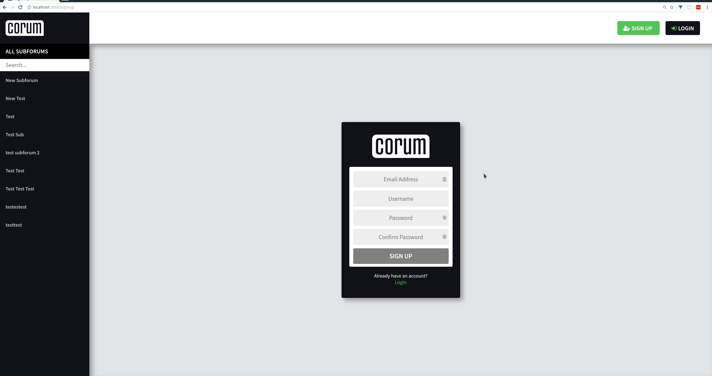
Email and Username are Already Taken
- The correct error message is displayed
- It is assumed that the email
test@test.comis already taken - It is assumed that the username
testis already taken
Location: images/gifs/signup/both-taken.gif
Navigating to the Login Page
- The link provided on the signup page to the login page works
Location: images/gifs/signup/login-link.gif
Login Page
These also show the following:
- The url can be seen at the top (
/login) - The login button in the header is highlighted correctly
- The login button is only clickable when both fields have been filled
- On submit, the login button is no clickable and says 'Please Wait...'
Successful Login Attempt
- The user is redirected to the page they were on before if successful
- The logged in state has been changed (Show in navigation and header)
Location: images/gifs/login/correct.gif
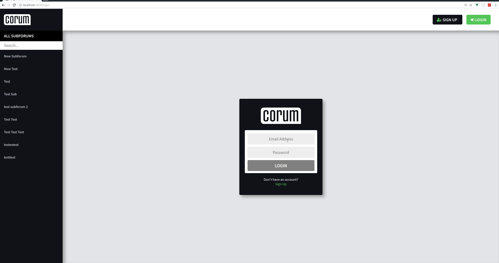
Unsuccessful Login Attempt
- The error message is displayed to the user when an attempt is not successful
- Once the user dismisses the error, (With the button or the enter key) they are free to try again
Location: images/gifs/login/invalid-credentials.gif
Navigating to the Signup Page
- The link provided on the login page to the signup page works
Location: images/gifs/login/signup-link.gif
Navigation
Links to Subforums Work
- The links navigate to the correct subforum page
- When on a subforum, it is highlighted in the navigation
Location: images/gifs/navigation/links.gif
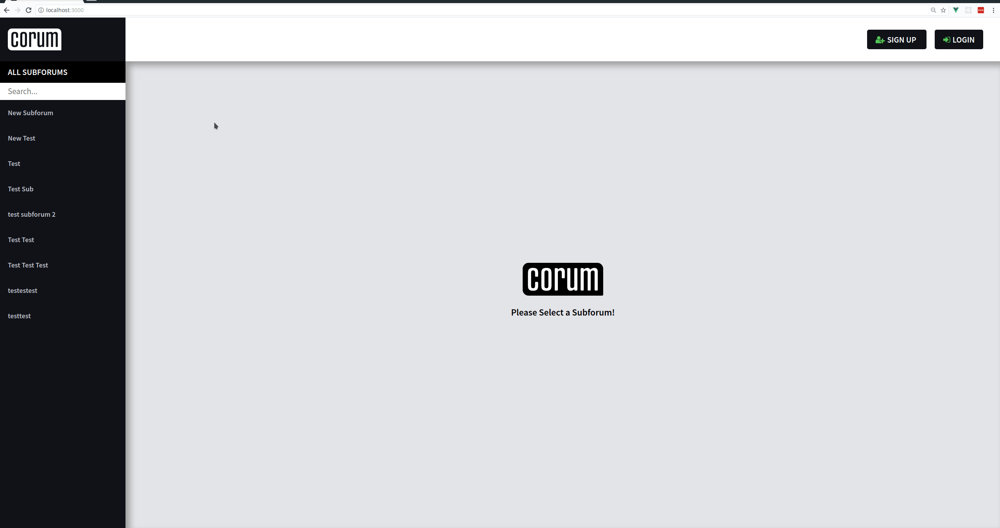
Search Functionality Works
- The 'All Subforums' list is filtered by the search input
- The search is case insensitive
- Mention the filtering code below (Link)
- When no items match the search term, show a message
Location: images/gifs/navigation/search.gif
- If the user is logged in and no items match, show a slightly different message with a link to create a subforum
- Link to the create a subforum page works
Location: images/gifs/navigation/search-logged-in.gif
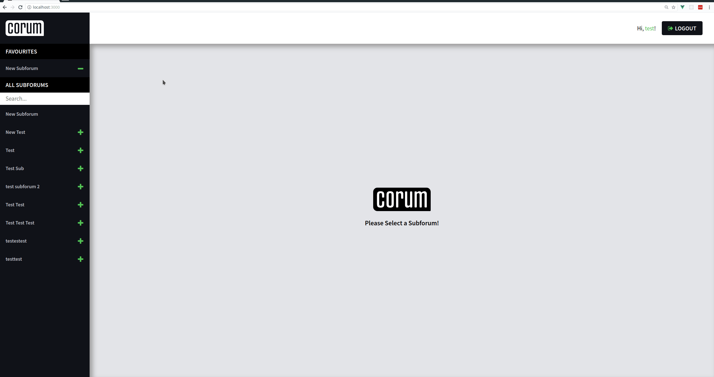
Navigation shows Favorites when Logged In
- When the user logs in, the navigation updates correctly
- The favorites section is not shown when a user is not logged in
Location: images/gifs/navigation/login.gif
Favorites Works
- When the user has favorites, they are displayed in the favorites section
- Each item in the favorites section has a '-' button to remove items from the favorites section
- Each item in the 'All Subforums' section that is not already in the favorites section has a '+' button to add items to the favorites section
- When the favorites section is empty, a message is shown
- The add and remove button work correctly
- The favorites are sorted correctly (Refer to sort cod below, link)
Location: images/gifs/navigation/favorites.gif
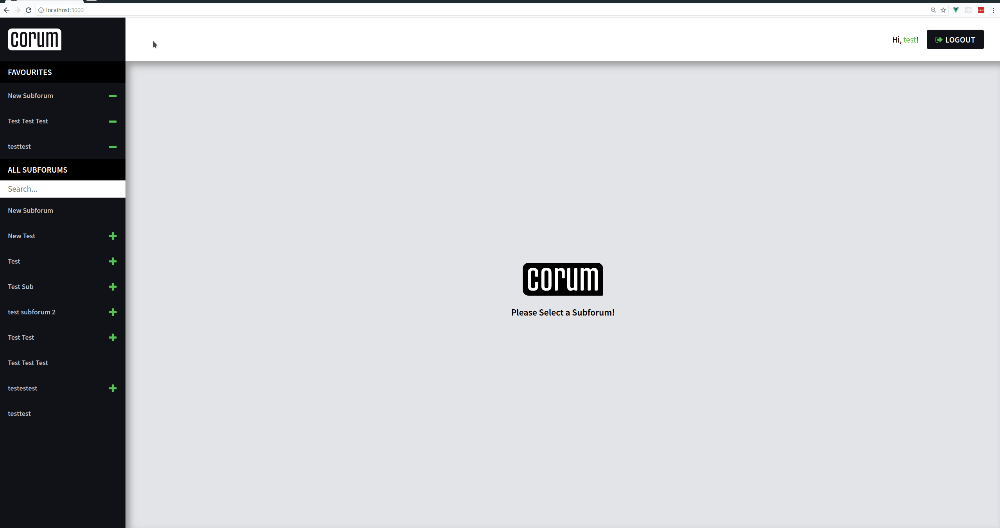
Subforum Page
Empty Subforum Message
- Display a message when a subforum has no posts
Location: images/gifs/subforum/empty.gif
The 'New Post' Button
- When a user is logged in, the button is clickable
- When a user is not logged in, the button is greyed out and not clickable
Location: images/gifs/subforum/new-post-button.gif
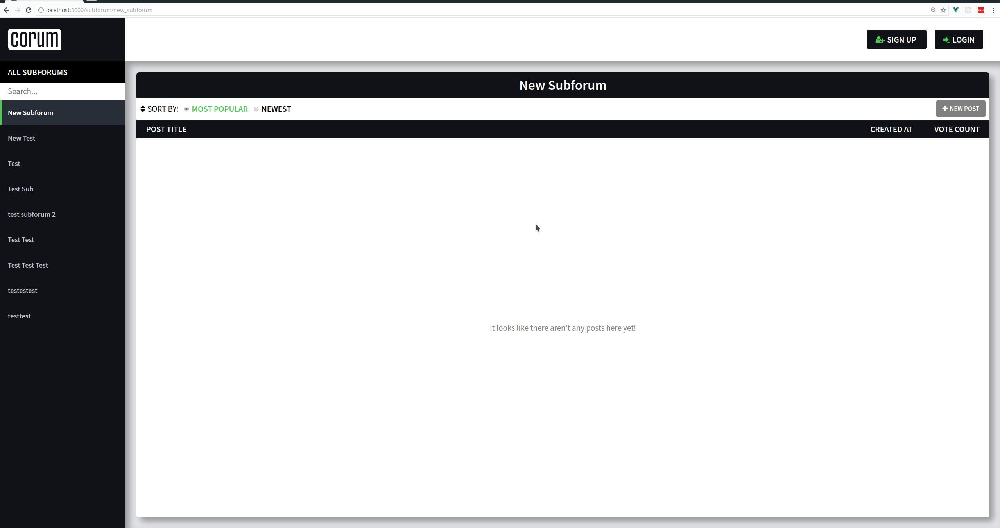
The Post List
- The list contains the following information about the post:
- Post title
- Created at
- Vote count
- Each post in the list is a link to the post
Location: images/gifs/subforum/post-list.gif
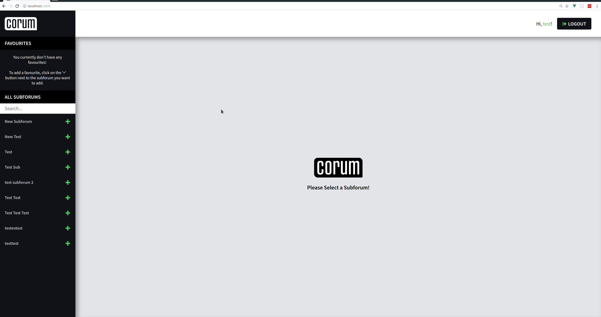
Sorting Functionality
- The default sorting method is by 'most popular' posts
- Both sort methods sort in descending order
- The 'most popular' sort method sorts by vote count
- The 'newest' sort method sorts by created at time and date
Location: images/gifs/subforum/sorting.gif
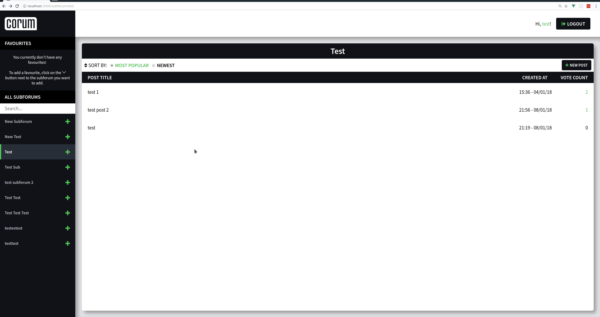
Post Page
Posts are Loading Correctly
- Links from subforum pages work and post details are loaded
Location: images/gifs/post/load.gif
Comments Section
- If there are no comments, show a message
- You cannot comment when not logged in
- When logged in, add a section add the bottom of the page to add a comment
- When a comment is submitted, it is added to the comment section of the page
- The user cannot submit a comment when no text has been entered
- The comment count is updated correctly
Location: images/gifs/post/comment.gif
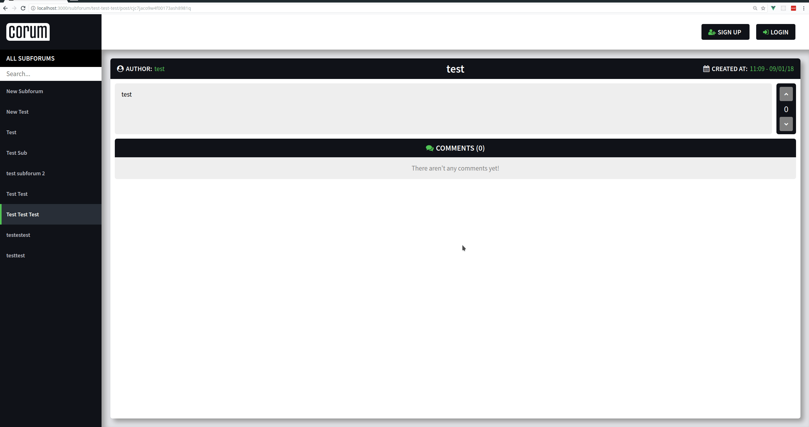
Post Voting
- The vote count is displayed in the top right of a post
- There is a button to upvote and a button to downvote a post
- If a user is not logged in, then vote buttons are greyed out and not clickable
- If a user is logged in, the vote buttons are clickable
- The vote count updates properly (Reference code below, link)
Location: images/gifs/post/vote.gif
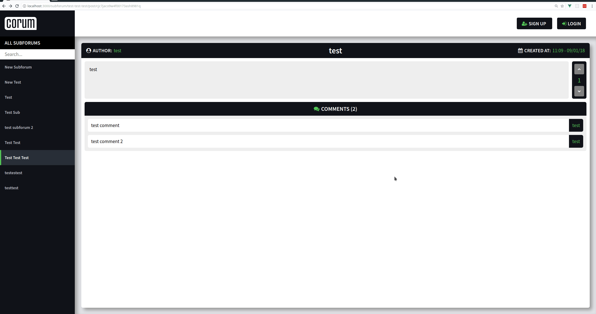
New Post Page
- The 'New Post' button in a subforum brings the user to this page
- A new post can only be submitted when both fields are filled in
- The user is then redirected to the newly created post after they submit it
- The new post is inserted into the subforum from which the user click the 'New Post' button
Location: images/gifs/new-post/index.gif
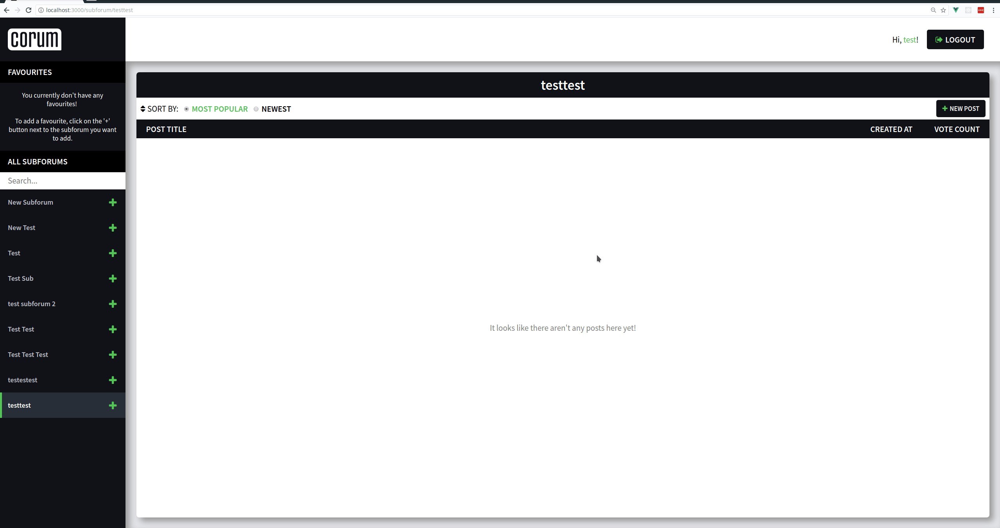
- If a user tries to visit this page when they are not logged in, an error message is displayed with links to either signup or login
Location: images/gifs/new-post/error.gif
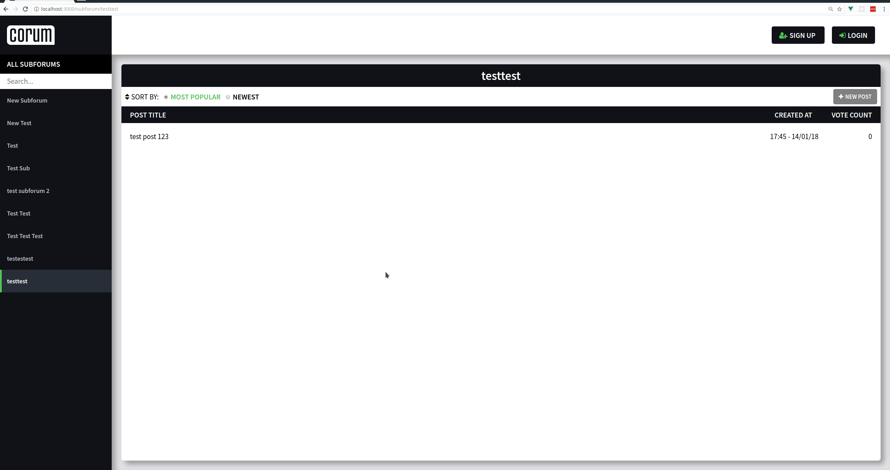
New Subforum Page
- The only way to access this page is through the navigation when a user is logged in
Location: images/gifs/new-subforum/index.gif
- If the user tries to create a subforum that already exists, an error occurs
Location: images/gifs/new-subforum/exists.gif
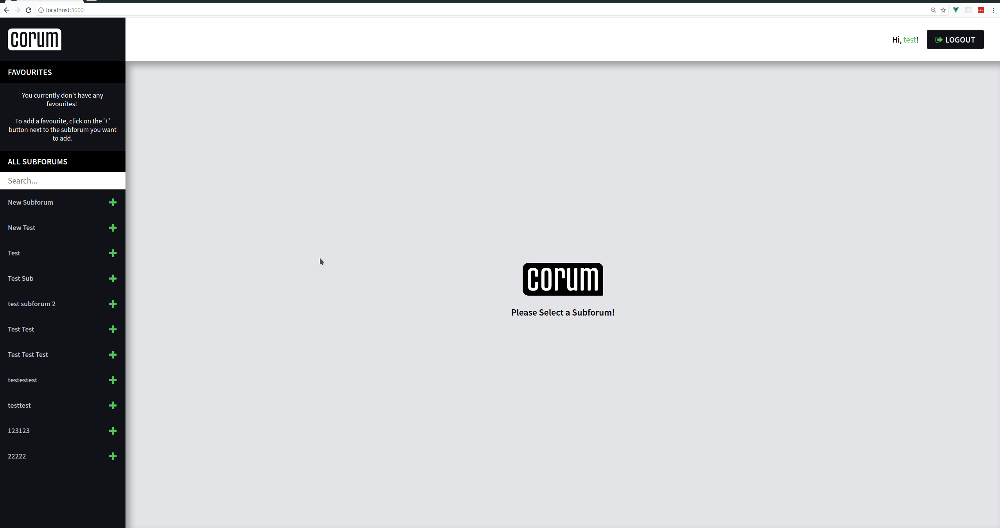
- If a user tries to visit this page when they are not logged in, an error message is displayed with links to either signup or login
Location: images/gifs/new-subforum/error.gif
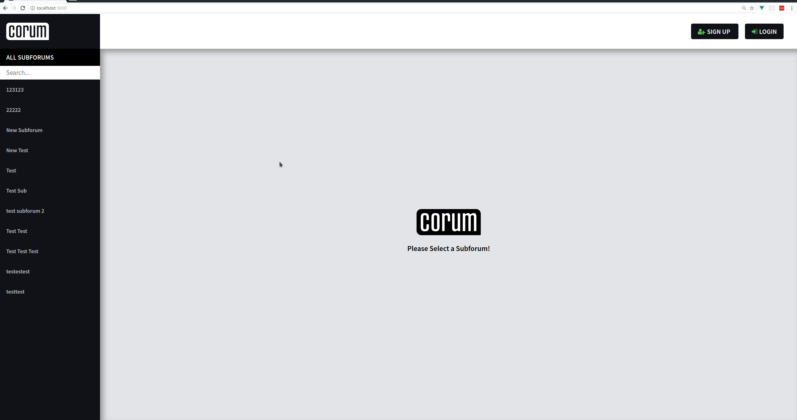
Usability Features
- Quick loading between actions
- Instant search of subforums
- Optimistic UI updates (For example, adding a comment or voting on a post)
- Loading states
- On loading navigation lists
- On loading a subforum or a post
- Signup and login loading states
- Helpful error messages
- justify their success
Final Evaluation
Success of the Solution
- Reference to test data
- Cross reference test evidence with success criteria and evaluate how well the criteria has been met. If any have not been fully met, comment on how they could be met with further development.
- One major one I can think of now (Not currently in the success criteria) is that the ergonomics of deployment is not the best. One solution to this would be to move the API to Prisma and offer an option to host the API and the client on the same machine with a single command.
- Could also talk about the possibility of adding GraphQL subscriptions to
provide live updating info for the following:
- New posts coming up on the subforum page
- Vote count updating both on subforum and post page
- New comments coming up on post page
- Possible new subforums as well?
Limitations and Maintenance
- Mention the fact that I did not get around to implementing the automated tests. This was because Nuxt, the client framework I am using, makes it hard to build robust tests at the moment. In future version of the framework, they have said that they will address this issue, and it will be easier to create robust tests. This will impact maintenance because when refactoring, adding and features and code, it will not be nearly as easy to tell if those changes have broke any other code depending on them.
- Talk about good code comments
- Talk about how this report itself could be used by myself and others to get familiar with the project.
- Talk about how these limitations could be fixed